1~12장 본문과 단어를 직접 읽어 초벌 전사했습니다. 13·14장은 현재 합본에서 확인되지 않아 원문 확보가 필요하고, 15장은 확보된 학습지 한 장만 반영했고 전체 원문 대조가 필요하며, 16~17장 확보 학습지도 반영했습니다. 전체 원본 재대조와 브라우저 검수는 아직 남아 있습니다. OCR·파이썬 텍스트 추출을 사용하지 않았습니다.
Chapter 1
직접 읽기 전사 · 학습지 #1–7 반영 · #8의 2장 시작과 경계 대조 완료
[A]
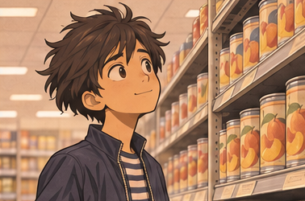
1Peaches, Michael Rosario thought. 2.
[B]
3His mother loved peaches.
[C]
4If the world on January 1, 2000, she would have two things she : peaches and Michael.
[D]
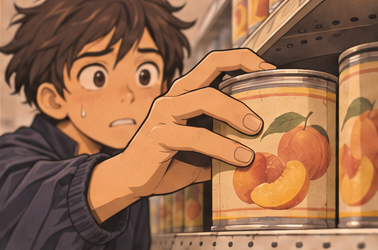
5He the of in Super Saver. 6He the can from the shelf.
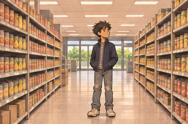
7He looked left. 8Then right. 9Then left again. 10It was early— seven thirty in the morning—so the place was empty. 11It was the perfect time to go .
[E]
12If you'd call it that.
[F]
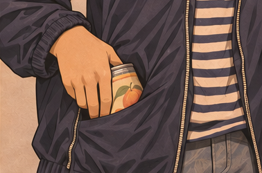
13He the peaches into the pocket of his and felt them .
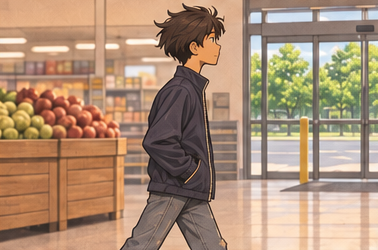
14He the and in that direction.
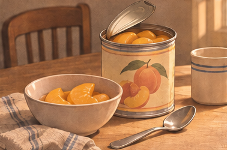
15He his mother, in the hours of the new , a of sweet peaches into her mouth, saying, "You know what, Michael? 16You were right about Y2K. 17I should have listened. 18Sometimes eleven-year-old boys know exactly what to do."
[G]
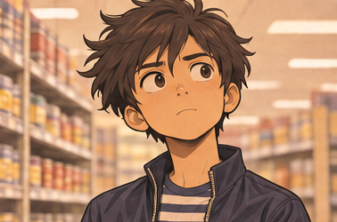
19Only he wasn't eleven anymore. 20, he was twelve.
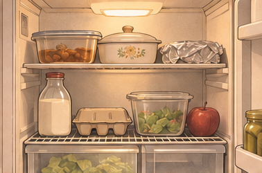
21And they probably wouldn't need to open the . 22They'd have to eat everything from the first before it all .
[H]
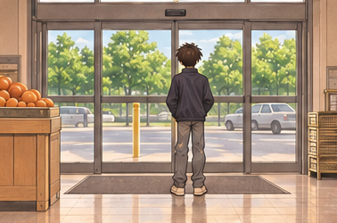
23The was right in front of him—one or two steps and shoop, the would slide open—
[I]
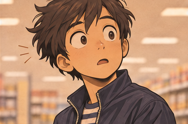
24"Hey-hey, Mikey-Mike."
[J]
25He froze.
[K]
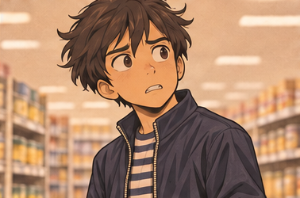
26It's Michael, not Mikey-Mike, he said, though he didn't say it , because he the voice and it Billy Gibson, who everyone called Beejee.
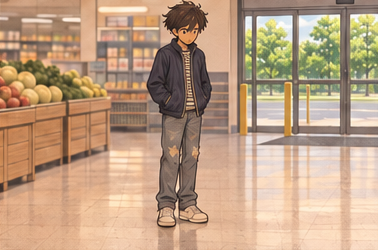
27If Michael were a different person, he might have kept walking or he hadn't heard, but he couldn't—of course he couldn't—because everyone always heard Beejee. 28Beejee of that.
[L]
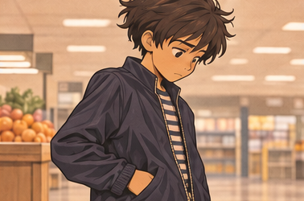
29Michael turned.
[M]
30The peaches were so, so heavy.
[N]
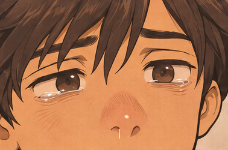
31Michael felt the to —he was still his stupid summer cold—and his eyes .
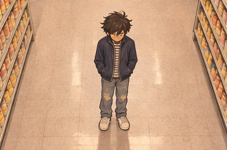
32He didn't want to move, he didn't want to , he didn't want to do anything but into the .
[O]
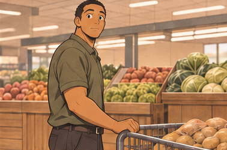
33Beejee was in the wearing the Super Saver , the same kind Michael's mother had worn before she'd been . 34A of potatoes was parked next to him.
[P]
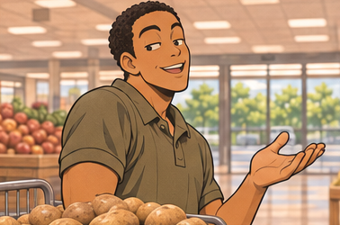
35"What're you doing here so early in the morning?" 36Beejee said.
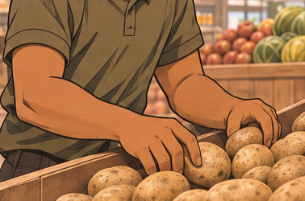
37He picked up some potatoes and them into place.
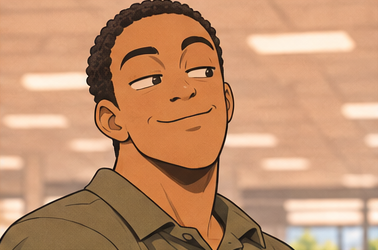
38"Getting flowers for your mama?" 39He .
[Q]
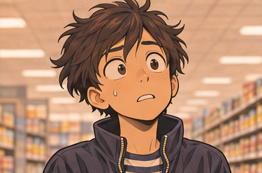
40Michael couldn't think of anything to say. 41Not a single word .
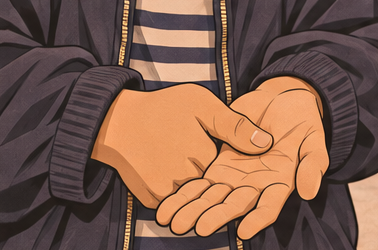
42He his right into the center of his left .
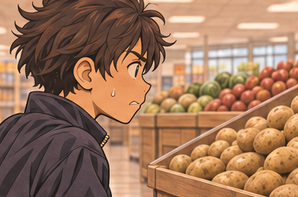
43As soon as he looks at the potatoes again, I'll keep walking, he told himself. 44But Beejee didn't look at the potatoes.
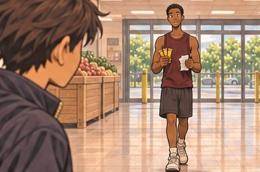
45Instead, his over Michael's shoulder and Jamar Prince, who was walking toward them holding three Butterfingers and a .
[R]
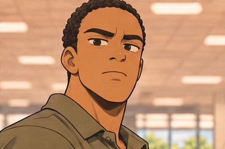
46Beejee's turned serious.
[S]
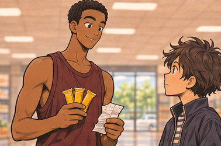
47Jamar smiled at Michael. 48"Hey, I thought that was you," he said. 49"You wanna walk back with me?"
[T]
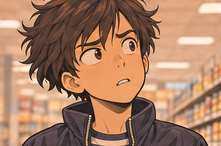
50 did Jamar Prince, who was sixteen and in high school, want to walk anywhere with him? 51 did Billy Gibson work the ?
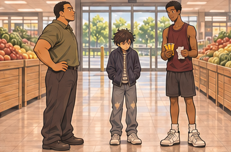
52 did come anywhere near the Super Saver at seven thirty a.m.? 53Michael was here at this time because he didn't want to see anyone, and now look.
[U]
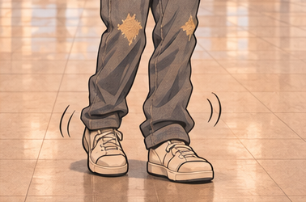
54"Um." 55Michael .
[V]
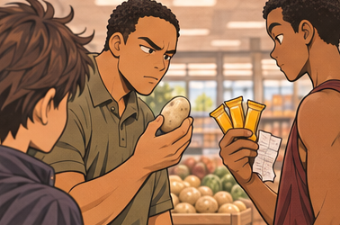
56Beejee over holding a white potato, which the and color of his head.
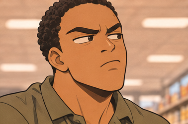
57He his eyes at Jamar's . 58"Did you those?"
[W]
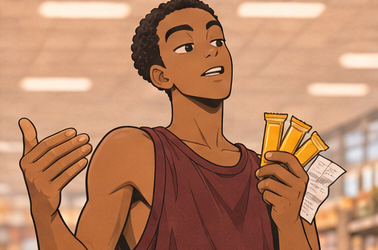
59Jamar . 60"Yeah, I paid for them," he said, his voice .
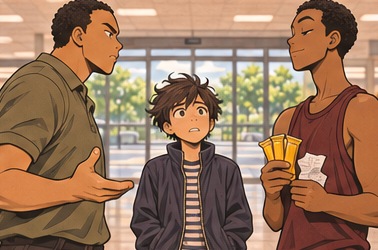
61"What're you trying to say?"
[X]
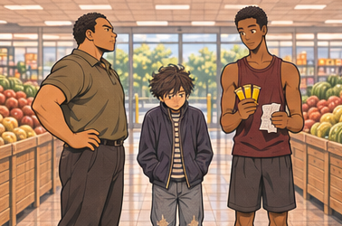
62Michael's body . 63He felt like a two .
[Y]
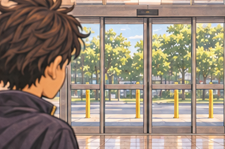
64The was right there. 65.
[Z]
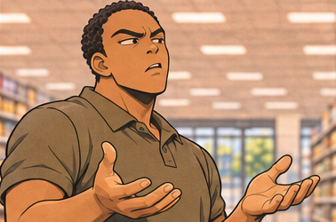
66"If you paid for them, they're not in a bag?" 67said Beejee.
[AA]
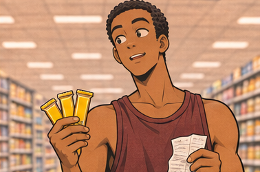
68"What do I need a bag for?" 69Jamar said. 70"And I don't need to from this store when I have money ."
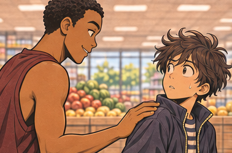
71Jamar stepped closer to Michael and his shoulder. 72"Come on, let's walk back. 73."
[AB]
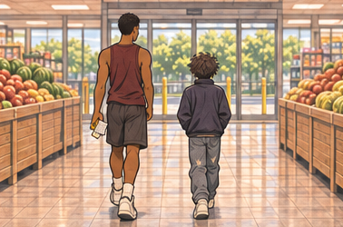
74Jamar toward the .
[AC]
75Michael followed.
[AD]
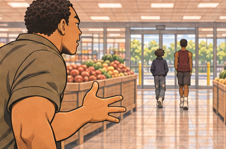
76"You better not be stealing! 77My father's the , you know!" 78Beejee . 79He was talking to Jamar, of course, even though Michael was the one with a pocket full of peaches.
[AE]
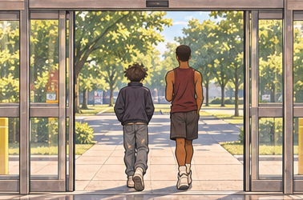
80Jamar called Beejee a name —a —as he and Michael went through the and walked toward Fox Run Apartments, where they both lived.
[AF]
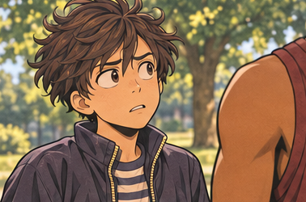
81Michael . 82He heard it all the time, of course—at school, around the , in movies—but , it made him feel . 83Like he was doing something wrong, even though he wasn't doing anything.
[AG]
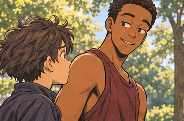
84"I wanted to he wasn't ," Jamar said.
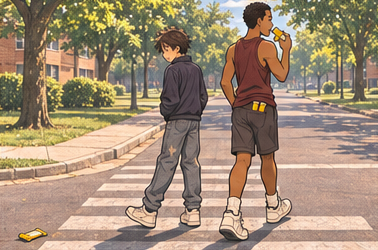
85He two of the in his back pocket, the third open with his teeth, and a piece of the onto the ground as they . 86Michael wanted to so he could , but he didn't want to look .
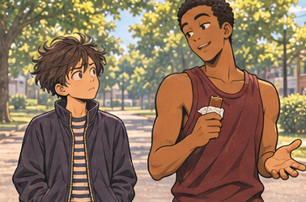
87Jamar continued. 88"Sometimes he Darius."
[AH]
89Darius was Jamar's brother. 90Michael wasn't sure how old he was. 91Maybe eight or nine.
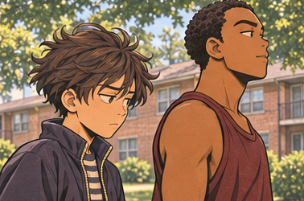
92Jamar had another brother, Elijah, who was going into seventh grade, just like Michael. 93They weren't friends. 94They weren't . 95They weren't anything.
[AI]
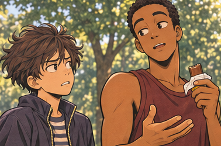
96"Darius is quiet, like you," Jamar said, his mouth full. 97"Easy for people." 98Except he didn't say "people." 99He said the again.
[AJ]
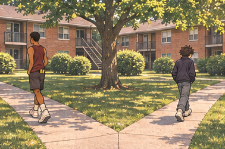
100They were now Fox Run Apartments and Townhomes—The Best in Delaware!—and Jamar left, toward Building A, while Michael right, toward Building J.
[AK]
101"," said Jamar.
[AL]
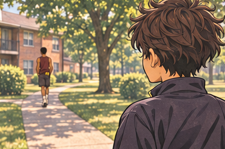
102"Thanks," Michael said. 103But Jamar was already too far away to hear him.
[AM]
104Michael didn't realize how he was until he saw the near his building. 105He and his shoulders. 106Everything looked as it should. 107Cars in their parking spots; a , the one Michael had named Tuxedo, around the bushes; Mr. 108Mosley, the , a can of paint toward a apartment.
[AN]
109"Hey, Mr. 110Mosley," Michael said.
[AO]
111Mosley looked up. 112He had a brown, face, with and from his to his , but when he smiled—like he was doing now—all the lines settled at the corners of his eyes. 113He was wearing his painting with Fox Run on the pocket.
[AP]
114"Michael!" 115Mosley said . 116He the can of paint. 117"Just the man I wanted to see." 118He out his , the one with the Philadelphia Eagles logo on the front, and a twenty-dollar from it. 119"Today is your big day, ." 120He waved the money in Michael's direction.
[AQ]
121"You don't have to give me anything," Michael said. 122He sneezed and his nose with the back of his hand—something he'd never do if his mama were here. 123But Mr. 124Mosley didn't care about such things.
[AR]
125"Well, yeah, I don't have to. 126There are only two things I have to do: and die," Mosley said. 127One of his favorite expressions. 128"Actually, make that three things: , die, and paint 3F." 129He the paint can. 130 white, it said. 131Same color in every apartment. 132"But for right now, I'm giving you twenty bucks."
[AS]
133Michael wanted to take it. 134But he also didn't want to take it. 135It's one thing to because you don't have money. 136It's another thing to when you do.
[AT]
137That's how Michael it, anyway.
[AU]
138Maybe I'll walk back to the Super Saver later and the peaches , he thought, even though he knew he wouldn't.
[AV]
139"Thanks, Mr. 140Mosley," Michael said. 141He took the money.
[AW]
142"No problem. 143—"
[AX]
144Mosley stopped .
[AY]
145There was a kid, a teenager, away, toward them with an on his face. 146He kept , like he was . 147He looked . . . what? 148Not afraid or , exactly. 149More like someone who had just . 150 a bank, perhaps, or stolen from Super Saver. 151As he came closer, Michael how his clothes were. 152He was wearing a . 153Shirt and pants. 154White, but not white. 155, maybe. 156Like the paint. 157And his shoes were exactly the same color. 158Together, the in the sun.
[AZ]
159Mosley Michael.
[BA]
160"Hey there," Mosley said. 161"Can I help you?"
[BB]
162The teenager seemed that Mosley was speaking to him, even though Mosley and Michael had been watching him and .
[BC]
163"Hello," the teenager said. 164He looked like he could be half , like Michael. 165He stopped on the a few steps in front of them and . 166"What's up?"
[BD]
167"You need help with something?" 168Mosley said.
[BE]
169"No. 170I mean, yes?" 171He paused. 172"My name is Ridge. 173."
[BF]
174Mosley the . 175"You need help with something?"
[BG]
176"Could you tell me ?" 177Ridge said.
[BH]
178"It's August seventeenth," Michael said .
[BI]
179"Thank you," Ridge said. 180He over his shoulder. 181"?"
[BJ]
182Michael at Mosley. 183What kind of person didn't know what year it was?
[BK]
184"It's 1999," Mosley , more a question than a .
[BL]
185Ridge the year . 186The on his face changed. 187 or . 188Michael couldn't .
[BM]
189"You live here, at Fox Run?" 190Mosley said. 191"Never seen you around before."
[BN]
192Ridge didn't answer. 193He was his like he was trying to a .
[BO]
194"Did you hear me, kid?" 195Mosley asked.
[BP]
196"Yes. 197I mean, yeah," Ridge , walking like he to them. 198"I do. 199I live right around here." 200He waved in a that didn't mean anything. 201Then he . 202"Thanks for your help! 203!"
[BQ]
204Mosley and Michael watched him behind Building F.
[BR]
205"Well, that was weird," Mosley said. 206He picked up the paint can. 207"Better that kid if we see him around again. 208He's ." 209He punched Michael on the shoulder. 210"Then again, we're all in our own way. 211Right, Michael?"
[BS]
212"Yeah," Michael said, thinking about his pocket of peaches. 213"We're all ."
Chapter 2
직접 읽기 전사 · 학습지 #8–10 · #11의 3장 시작과 경계 대조 완료
[A]
1It was eight a.m. when Michael the to find his sixteen-year-old on his . 2Gibby. 3, , brown eyes at him. 4A of Last Act by Christopher Pike sat on her , its . 5The smell of strawberries the air. 6He wasn't sure if it was shampoo, , lotion, or what. 7Michael .
[B]
8Did all sixteen-year-old girls smell like strawberries, or just Gibby?
[C]
9Just Gibby, probably.
[D]
10, Gibby was the only reason Fox Run Apartments were the "best in Delaware." 11She lived in Building N.
[E]
12"You have some , mister," Gibby said. 13"Today is a babysitting day. 14I got here at 7:30 , and you weren't here. 15Your mother said—"
[F]
16"My mom didn't tell me it was a babysitting day."
[G]
17"—that you are leave this apartment when you're ."
[H]
18His mom couldn't to pay Gibby every day. 19Instead, she picked days . 20Michael to know which days were Gibby days and which weren't. 21He wished all of them were, even though twelve was way too old for a .
[I]
22"So? 23Where were you?"
[J]
24"Uh . . ." 25He his eyes away from her face.
[K]
26She her foot. 27She had small, feet inside pink .
[L]
28He couldn't say he'd gone to Super Saver. 29If his mom , he'd be . 30But Beejee had seen him, and Beejee was Gibby's brother. 31(Michael still couldn't how the world's most could be a potato like Beejee, but these were the of the .)
[M]
32Michael to go with a .
[N]
33"I was talking to Jamar Prince," he said. 34Gibby went to high school with Jamar. 35If she thought Michael was Jamar, maybe she wouldn't see Michael .
[O]
36"About what?"
[P]
37Michael . 38"Nothing, I guess."
[Q]
39She was still him with her , so he . 40"Then Mr. 41Mosley and I saw a guy outside."
[R]
42"What kind of guy?"
[S]
43"I don't know, ," Michael said. 44He wasn't sure where to begin. 45The strange ? 46The fact that he didn't know what year it was? 47The way his eyes before he said "Peace out"? 48Michael . 49"Just ."
[T]
50Gibby her arms and . 51"Well, you're still leave the apartment alone. 52Especially if some guy is . 53But . . ."
[U]
54She . 55A smile her face. 56"I I'll , since it's your birthday."
[V]
57Michael's heart . 58"You remembered!"
[W]
59She and a she'd under the . 60Michael forward, , and took it—with too much , probably, like a kid. 61But he . 62He and let the fall to the .
[X]
63"The new Red Hot Chili Peppers CD!" 64Michael , she didn't know what she'd given him. 65"Yes! 66Thank you!"
[Y]
67Gibby stood up and him. 68Before he could decide how to hug her back, she'd . 69The world was now strawberries.
[Z]
70He .
[AA]
71"You're welcome," she said. 72"What's the point of working at Circuit City if I don't use the ?"
[AB]
73Michael turned over the CD and read the list of , one by one.
[AC]
74Surely it meant something that she'd gotten him a gift, right?
[AD]
75And it was a Red Hot Chili Peppers CD too, which was his favorite band.
[AE]
76She remembered his favorite band and his birthday.
[AF]
77That had to mean something.
Chapter 3
직접 읽기 전사 · 학습지 #11–13 · #14의 4장 시작과 경계 대조 완료
[A]
1Mosley rang Michael’s . 2When Gibby opened the door, he came in with three sandwiches—two for him, one for Michael—and a of Skittles for Gibby.
[B]
3“ to tell your mom we had a lunch,” he said to Michael as he on the one at the and a can of Dr Pepper, his drink.
[C]
4Mosley was the first friend Michael and his mama had made when they Fox Run. 5When Ms. 6Rosario was working, which was , Mosley to Michael hadn’t been by or by . 7, Mosley like he was there to something, like the or the , but he the and now he just came over for lunch.
[D]
8Mosley took a bite of his sandwich and turned toward Gibby, who was reading her book with the bag of Skittles next to her.
[E]
9“What book you got there, kiddo?” 10Mosley asked, talking .
[F]
11“It’s called Last Act, by Christopher Pike,” Gibby said. 12She looked up, eyes bright. 13“It’s about this group of who at school about a . 14And then, on , the is . 15This girl Melanie doing it, because she and everything, but she didn’t do it, because the gun be a . 16Now she has to who the real is before her life is, like, .”
[G]
17“,” Mosley said. 18He . 19“I can’t the last time I read a book. 20I was Michael’s . 21Fifty years ago, now. 22Man, .”
[H]
23Gibby . 24“You haven’t read a book in fifty years?”
[I]
25“Never had to, I guess.”
[J]
26Michael stood at the eating his sandwich , trying to Mr. 27Mosley as a twelve-year-old.
[K]
28“You can this when I’m done,” Gibby said, . 29“It’s so good! 30I won’t say anything else about it. 31That way I won’t anything.”
[L]
32“A book might ,” Mosley said.
[M]
33Mosley had been once, a long time ago, but now he lived . 34He’d never had kids.
[N]
35Michael his sandwich and the off his hands. 36“Did you see that guy again, Mr. 37Mosley?”
[O]
38“Yeah, I saw him,” Mosley said. 39“ about that kid. 40Can’t . 41If he too long, I’ll have to tell Mr. 42Ship. 43Hate to do that, though. 44.”
[P]
45“ what?” 46Michael asked.
[Q]
47“ he’s . 48Don’t wanna if he’s some kid . 49I what that’s like.”
[R]
50“ he’s not an kid, though?” 51Michael said. 52It was easy enough to an of . 53They Michael’s mind like in a movie. 54 . 55 twelve-year-old . 56 beautiful sixteen-year-old who smells like strawberries and loves . 57Click, click, click.
[S]
58“Don’t worry,” Mosley said. 59“I’m sure it’s nothing.” 60He took another bite of his sandwich. 61“ he’s gone by tomorrow.”
Chapter 4
직접 읽기 전사 · 학습지 #14–18 · 첫 합본 PDF 종료까지 반영
[A]
1At three o'clock, Michael and Gibby left the apartment to the cats.
[B]
2They weren't . 3Mosley had them that the , Mr. 4Shipman—who everyone called "Ship"—would "" if they ever , but Michael the thought of the cats . 5"Cats never go hungry," Mosley had said. 6"They're ."
[C]
7But Michael would at night, imagining of them—perhaps some he'd never even seen— the world alone. 8In his , they were always sad. 9Hungry. 10 into the darkness, waiting for someone to them.
[D]
11He couldn't sleep sometimes because of it.
[E]
12So they fed the cats. 13It wasn't a or anything. 14Just cheap stuff in from Dollar General. 15Better than nothing, though.
[F]
16They had a . 17Michael put fresh tins under the in front of Buildings N, M, and L and the in an while Gibby .
[G]
18They had moved on to Building L when Michael decided to tell a small lie.
[H]
19"I might this year," he said.
[I]
20"Really?" 21Gibby said.
[J]
22Michael reached behind a bush and the can they'd last week.
[K]
23"Yep," he said, the empty can into the bag. 24"Maybe football."
[L]
25"Football?"
[M]
26"Yeah," Michael said, wiping his hands on his jeans. 27He didn't like the look she was giving him, even though it was the same look he'd give himself if he was . 28Or sandals, as the case may be. 29"Why? 30You don't think I'd be good at football?"
[N]
31He pulled the off a can of Best Feast.
[O]
32"It's not that," she said. 33"It just . . . doesn't seem like ."
[P]
34A question : What do you think is my thing, then? 35But he didn't ask. 36He wasn't sure he wanted to know the answer. 37, he set the Best Feast in its and said, "It could be. 38My dad is an , you know. 39Or he was. 40Maybe he still is."
[Q]
41"I didn't know that."
[R]
42"He played basketball for Villanova."
[S]
43" your dad is an doesn't mean you have to be," Gibby said. 44She her hair in a and it with a blue .
[T]
45"I know," Michael said.
[U]
46"So why do you want to do it then?"
[V]
47Michael with one shoulder. 48A into their .
[W]
49"I don't know," he said.
[X]
50But he did know.
[Y]
51If he played football, people might like him. 52Girls, even. 53Girls like Gibby.
[Z]
54No one had ever liked him before. 55Not like that. 56Not like anything, really.
[AA]
57They the cat food in front of Building L, then toward the to the empty cans. 58Michael kicked at the as they walked, something to say.
[AB]
59Maybe I should ask her about her book, he thought.
[AC]
60"Who is that?" 61Gibby said.
[AD]
62Michael .
[AE]
63It was Ridge. 64He was standing , the with his nose pressed in the .
[AF]
65"That's the guy me and Mr. 66Mosley were talking about," Michael said, .
[AG]
67"What's he doing?"
[AH]
68"I . 69Let's ," Michael said. 70"We'll just go to another ."
[AI]
71"Oh, wait. 72He saw us," Gibby said.
[AJ]
73She was right. 74Ridge was looking at them, their way.
[AK]
75"Hello, ?" 76he said. 77His voice was . 78. 79He stopped and to the behind him. 80"Can you tell me what that is?"
[AL]
81Gibby . 82"What, the ?"
[AM]
83"Dumpsters," Ridge .
[AN]
84"It's where people put their ?" 85Michael said.
[AO]
86Mr. 87Mosley's words in his head. 88 about that kid.
[AP]
89"Oh," Ridge said. 90He laughed . 91"I know. 92I was just ."
[AQ]
93"Um. 94Okaaay," Gibby said.
[AR]
95Michael wanted to leave. 96He didn't want to be near someone who was off. 97The whole thing made him . 98But , Gibby said, "What were you doing over there, ? 99You looked ."
[AS]
100Ridge to where he'd been standing, he'd see himself there.
[AT]
101"Oh, that? 102I was just . . . 103I don't know, studying it? 104The smell is ."
[AU]
105"That's because it's ," said Gibby.
[AV]
106"Word."
[AW]
107"Word?" 108Gibby asked, .
[AX]
109"I mean . . . yes. 110It's ." 111Ridge nodded toward their bags and . 112"Is that plastic?"
[AY]
113"Yes," Michael said.
[AZ]
114"Plastic ," Gibby noted. 115"I'm Gibby, . 116This is Michael."
[BA]
117"I'm Ridge," Ridge said. 118He . 119Gibby pointed at the building. 120"Do you live there?"
[BB]
121"I'm , you could say," Ridge said. 122"Which building do you live in?"
[BC]
123He his hands in his pockets and smiled. 124It changed the of his face. 125Suddenly he didn't look so off and . 126, he looked , which only made Michael more .
[BD]
127Gibby laughed. 128One loud "Ha!"
[BE]
129"Like I'm going to tell some which building I live in," she said.
[BF]
130"You asked me first," Ridge said. 131Still smiling. 132"What about you, Mike? 133Which one—"
[BG]
134"It's Michael, not Mike," said Michael. 135He turned to Gibby and his bag of empty Best Feast cans. 136"I'm going to ."
[BH]
137Michael may have only just turned twelve, but he knew one thing : there was something strange about a guy who was by and didn't know what year it was.
[BI]
138, Gibby followed him.
[BJ]
139As with all , the late twentieth century— here as 1980 to 1999—developed its own , some of which from earlier , and others that were by , music. 140 should avoid with (NTIs); however, if scientists are engaged in conversation, they should popular being used at this time have an , natural conversation.
[BK]
141The used in this timeprint could the age of the NTIs, their and/or , and/or their ; , the following should be considered for young NTIs in the United States during this .
[BL]
142? 143A common , especially among young people. 144If an NTI says "," do not take this . 145, the NTI is asking how you are and/or what you are doing.
[BM]
146Later. 147A common phrase of among young people. 148Can be used with "Goodbye." 149Other common phrases of in this "Peace" and "Peace out."
[BN]
150Not even. 151This "I don't with you." 152 used in . 153Can be used with "No way," in which the person would with "Way."
[BO]
154No duh. 155This phrase would be spoken when someone has said something .
[BP]
156Let's bounce. 157This should not be taken . 158It means to leave or .
[BQ]
159Word. 160, this means "I ," but is also used to mean many other things. 161It can be a question, , such as "Word?" 162The scientist is to simply "word" back to the speaker and/or to consider the of the conversation before providing an .
[BR]
163Bad/baddest/badder. 164When used as in this timeprint, bad often means good. 165However, good never means bad. 166Good means good. 167Bad means " good."
[BS]
168 from The Pop Culture Omnibus (1990-2020), by Maria Sabio, PhD, DST, Chief STS, University of Delaware (2199)
Chapter 5
직접 읽기 전사 · 학습지 #19–25 · #26의 6장 시작과 경계 대조 완료
[A]
1The world would on January first. 2Michael knew it. 3Everyone knew it. 4People couldn't stop talking about how computers would when the year from 1999 to 2000. 5, , , all of it. 6Michael's mother didn't seem worried, but Michael knew she was too busy working three jobs to truly the of Y2K. 7That was why Michael was for both of them.
[B]
8, he on the of his bedroom to the and other he'd under his bed. 9That's what he was doing now, as he listened to his Red Hot Chili Peppers CD on his . 10He had it even because Gibby was in the living room and he wanted her to know how much he loved it.
[C]
11There were four cans of . 12Three cans of . 13Chef Boyardee, five cans. 14One of . 15Two bags of . 16And one can of peaches. 17He counted the days until Y2K. 18Fourteen days left in August. 19Thirty days in September. 20Thirty-one in October. 21Thirty in November. 22Thirty-one in December. 23That one hundred and thirty-six.
[D]
24The last song ended as he got up off the floor. 25Good thing too, because his mother would be home soon and she was not a .
[E]
26 Ms. 27Rosario worked three very different jobs, she kept the same each week, which Michael because he always knew where she was . 28From seven a.m. to on Monday through Friday, she worked at Little Rascals . 29On Wednesday through Sunday, she was a at Chi-Chi's Mexican . 30On Mondays and Tuesdays, she the two to nine p.m. at Danneman's .
[F]
31 she had been a at Super Saver, and she'd only needed one job. 32But that was before Michael everything.
[G]
33Tonight, though, she wouldn't be working until nine. 34She'd promised she'd come home early for his birthday and they'd watch television together. 35And she always .
[H]
36Michael sat on his bed and on his as filled the room. 37There was a small on the . 38Michael it and thought about Gibby, reading in the living room. 39Maybe I'll read that book too, he thought. 40Then they could talk about it.
[I]
41The front door just after seven. 42Michael heard the sound of his mother's voice. 43Thanking Gibby, , and giving her a few dollars.
[J]
44"I don't need a ," Michael said, to the . 45But one second later, he , the bedroom door, and , "Thanks for the CD!" 46 he'd already thanked her.
[K]
47Gibby was almost out the door. 48She gave him one last "Happy birthday!" 49Then she just as his mama him with a Foot Locker bag from her arm.
[L]
50"Birthday boy!" 51she . 52Her hung on her shirt. 53GLORIA. 54"I have a for you!"
[M]
55Michael smiled and on the . 56"How was work?" 57he asked.
[N]
58She smelled like the , but Michael . 59If his mother was home, he was happy, even if she smelled like .
[O]
60"I took ," she said.
[P]
61It was what she always said. 62I took . 63: if she was still here, still breathing, it was a good day, and she was for it.
[Q]
64She placed her hand on his . 65"Still no . 66Looks like you're . 67And I've got something that might bring you to a . 68Ta-da!" 69She the Foot Locker bag.
[R]
70Michael . 71"Thanks, Mom."
[S]
72He pulled out the box. 73It'd be nice to have new , even if they were off the . 74When he the , he to find a , design that had been marked . 75He did not expect a pair of Air Jordans, size eight. 76But that's exactly what he saw.
[T]
77"What," he said.
[U]
78This was an even than the CD.
[V]
79He the shoes. 80"But how?"
[W]
81She his head. 82"It's your birthday," she said.
[X]
83"But ..."
[Y]
84Air Jordans were . 85Really , like . 86And they didn't have . 87Just the week before, they'd the looking for for the .
[Z]
88"You're starting a new school soon," she said. 89"You need to . 90The only bad thing is, people will be looking at your feet your beautiful, face."
[AA]
91She his between her hands.
[AB]
92"But ...," he said again, thinking about the of on the and all the Y2K they could buy with . 93"How ..."
[AC]
94"It's your birthday," Ms. 95Rosario . 96"And this is your birthday gift."
[AD]
97Michael at the . 98They had bills, true. 99They needed to be for Y2K, yes. 100But Michael wanted the . 101He'd never had Jordans before. 102Most of his , a few favorite T-shirts, was . 103But these Jordans smelled so ... well, new. 104Like they'd been from the Nike just for him.
[AE]
105Ms. 106Rosario his . 107"All you have to do is say thank you."
[AF]
108Michael .
[AG]
109"Thank you," he said.
[AH]
110Michael put the on . 111 he heard the of his mom's shower, he went to his room, turned on his , and walked around the apartment, letting the music as his feet to the of Air Jordans. 112He wanted to wear them every minute, .
[AI]
113He to his bedroom window and looked out, .
[AJ]
114The between apartment buildings was , a person sitting on one of the .
[AK]
115Ridge.
[AL]
116Clipper, the with the and of missing , was sitting on his . 117Clipper was one of the sweetest strays at the complex. 118She loved to get behind the ears. 119She'd lived a but still people, somehow.
[AM]
120Michael thought of Mr. 121Mosley's words again—something's off about that kid—then the from the kitchen and called Gibby.
[AN]
122"Hey," Michael said she answered. 123"That guy Ridge is outside on the bench right now."
[AO]
124"So?"
[AP]
125"So, he has Clipper on his ." 126Michael to his room to look out the window.
[AQ]
127"He has who on his ?"
[AR]
128"One of the cats."
[AS]
129"So?"
[AT]
130"So, Mr. 131Mosley said there was something off about him. 132 ..."
[AU]
133 he Clipper across the ? 134 he Clipper's tail, just to hear her ? 135—
[AV]
136"I'm gonna go out there and see ," Michael said. 137There was a of in his voice, but he . 138He his music. 139"I mean, he was by . 140And did you see his clothes? 141There's with him. 142Something off."
[AW]
143Gibby . 144"No. 145Don't. 146I'll go." 147There was on .
[AX]
148"You shouldn't go ," Michael said. 149" he's a or something, like in one of your books?"
[AY]
150"I'm sure he's not a ," she said, like that was the most thing anyone could have said. 151"I'll ."
[AZ]
152After she , Michael returned the phone to its , the on his Jordans, and on the bathroom door.
[BA]
153"I'm going outside for a second, Mom," he said. 154"I'll be right back."
[BB]
155"Okay," she said, her voice . 156"But don't be too long. 157Wheel of Fortune starts soon."
[BC]
158"I'll be back by then," Michael said. 159, he added, "I hope."
[BD]
160There have been of time by , such as A. 161Saeed, L. 162Daystrom, D. 163Noonian, S. 164Huss-Roat, et al. (see of Time), but it is unknown how the of time may past, present, or future events, or the of time and space itself. 165 Scientists (STSs) this as the . 166Because of the , STSs must develop a and before . 167However, it is likely that we will never understand how influences the STSs engage in active teleportation.
[BE]
168Should the Global Science Council choose to , it is that STSs the of the existing and reduce of the by , which are as follows:
[BF]
1691. 170Do not information about , especially if NTIs have a ability to said events. 171In cases where NTIs do not have a ability to events, it is still best to all information.
[BG]
172From for (ST)
[BH]
173by Maria Sabio, PhD, DST, Chief STS, University of Delaware
Chapter 6
직접 읽기 전사 · 학습지 #26–31 · PDF 28쪽에서 7장 시작 확인 · 2차 대조 대기
[A]
1Michael's apartment was the than Gibby's, so he got there first. 2He didn't like anywhere. 3It usually meant he'd have to talk with someone he didn't know, which was his , they were a or not. 4But there was now, because Ridge and saw him.
[B]
5"Hello," said Ridge. 6"What's up?" 7He on the . 8"Want to sit?" 9Clipper . 10Michael watched her go.
[C]
11"Uh." 12. 13"I guess."
[D]
14He sat down just as Gibby , wearing her favorite University of Delaware T-shirt.
[E]
15"Is this a ?" 16Ridge said when he saw her. 17"A place where people ?"
[F]
18Something about Ridge Michael of at school, when they'd a to talk about or or whatever, and the would try to sound like one of the students. 19To be "cool." 20But Ridge wasn't a , so it didn't seem to .
[G]
21"How old are you?" 22Michael asked.
[H]
23Before Ridge could answer, Gibby sat down. 24"Where's the cat?"
[I]
25"She ran off," Michael said.
[J]
26"I'm sixteen," Ridge said. 27He Gibby's T-shirt. 28His face . 29"You go to UD?"
[K]
30"No," Gibby said. 31"I'm sixteen. 32I go to Red Knot. 33Where do you go?"
[L]
34"What do you mean?"
[M]
35"Where do you go to school?"
[N]
36"My mother me."
[O]
37"Like, ?"
[P]
38"Something like that," Ridge said.
[Q]
39"I'm going to UD when I ," said Gibby.
[R]
40Michael if he'd go to UD when he . 41He hadn't even started yet, so felt like . 42Maybe Gibby would be him when he got to . 43Maybe they'd even be in . 44Maybe I'll study something really smart, like or .
[S]
45"My mom works there," Ridge said.
[T]
46"What does she do?" 47Gibby asked.
[U]
48"She's the STS ," Ridge replied.
[V]
49"What is STS?" 50Michael asked.
[W]
51"—" Ridge stopped and . 52"I don't know. 53Something, something."
[X]
54A few seconds before Gibby said, "So listen—we were wondering . . . do you live in the , or . . ."
[Y]
55Ridge . 56"It's ."
[Z]
57"So you do, or what?" 58Gibby said.
[AA]
59"I live here, but I also don't live here."
[AB]
60"Are you ?" 61Gibby said. 62"Like, you live on this or something?"
[AC]
63"?" 64Ridge said, like he didn't know what it meant.
[AD]
65"Let's make this easy," Gibby said. 66"Where do you live?"
[AE]
67"I live with my mom in on the Red Knot at UD," Ridge replied .
[AF]
68"There is no Red Knot at UD," Gibby said.
[AG]
69"Not yet," Ridge .
[AH]
70"What do you mean, not yet?" 71said Gibby.
[AI]
72Michael toward his apartment. 73His mother was probably on the couch, waiting for him. 74She'd from work and everything. 75Michael leaving, but click-click-clicked through his mind. 76Ridge Gibby. 77Ridge Gibby and her into a . 78Ridge and Gibby because no one was there to them.
[AJ]
79Time to say something. 80 in the , Michael.
[AK]
81"You're being very ," Michael said.
[AL]
82"I know," said Ridge. 83"But I can't say anything. 84, I shouldn't. 85I want to. 86But I shouldn't."
[AM]
87"Why shouldn't you?" 88Gibby asked.
[AN]
89"Are you in or something?" 90Michael .
[AO]
91"No," Ridge said.
[AP]
92"Are you a ?" 93asked Gibby.
[AQ]
94"No."
[AR]
95Michael: "Are you someone?"
[AS]
96"No."
[AT]
97Gibby . 98"What, then?"
[AU]
99"I can't say. 100, I shouldn't." 101Ridge . 102"Could you tell me the ?"
[AV]
103"The ?" 104Gibby said.
[AW]
105"Yes. 106The . 107Don't you have buses or or something?"
[AX]
108"What are ?" 109Michael asked.
[AY]
110"We're not telling you anything you answer our questions," Gibby said.
[AZ]
111"But . . ."
[BA]
112"But what?" 113Gibby said.
[BB]
114"But if I tell you who I am . . ." 115Ridge , .
[BC]
116"If you tell us who you are, what?" 117Michael said.
[BD]
118"It might the ."
[BE]
119Gibby . 120"You certainly ."
[BF]
121"I'm being ."
[BG]
122"," Gibby said.
[BH]
123Ridge looked at Michael, then Gibby, then Michael, then Gibby. 124"If I tell you who I am and where I came from, you'll think I'm ."
[BI]
125"We already do," Gibby said.
[BJ]
126"You have to not to tell anyone," Ridge continued. 127". 128."
[BK]
129Gibby raised her right hand. 130"."
[BL]
131"Okay," Michael said, . 132He didn't raise his hand.
[BM]
133"All right. 134," Ridge began. 135He his next words. 136"I guess you could say I'm from around here."
[BN]
137Gibby toward his clothes. 138"Duh."
[BO]
139When Ridge didn't continue, Gibby again and said, "So, what? 140Are you a or something? 141Do you come from a country that and wears ?"
[BP]
142Ridge the of his shirt. 143"This isn't a uniform. 144It's a , and it was really expensive. 145When my mom how many I spent on it, she—"
[BQ]
146Gibby held up her hand. 147"Okay, okay, fine. 148It's expensive and and weird and . 149."
[BR]
150"I don't know where to start, ," Ridge said.
[BS]
151"Start ," Michael .
[BT]
152Ridge laughed. 153The sound the . 154"What's so funny?" 155Gibby said.
[BU]
156"It's just an thing to say. 157'Start .'"
[BV]
158Michael wasn't sure what meant. 159"Why?" 160he asked.
[BW]
161"It just is."
[BX]
162"Oh, ," Gibby said. 163"This is ." 164She gave Michael a look that said "Let's go." 165"But , Ridge—. 166If you try to live on this , Mr. 167Ship's going to ."
175"Okay, okay, wait," Ridge said quickly, for them to sit down. 176"I'll tell you where I'm from. 177You won't believe me, and it might the I speak it into the , but I'll tell you, because I the Saeed ."
[CB]
178"The what?" 179Gibby said.
[CC]
180"The Saeed . 181Saeed is a in my who says the fact that we in our —and all other timelines, such as this one, —is that is not as as people may believe, because someone had to be the first to do it, and everyone is still and living—"
[CD]
182Gibby's hand was up again. 183"This is like having a with the Riddler. 184Could you please and say something that actually ? 185Even if it's just, like, a of sense?"
[CE]
186They stared at him, waiting, and after a , in which all they heard was the of , Gibby said, "Well? 187Well!?"
[CF]
188Ridge closed his eyes, as if the news, even though he already knew what it was.
[CG]
189"I'm from the future," he said.
[CH]
190A (STM) sends persons and/or objects to in time (see ) through a process known as "," during which the persons and/or objects are into energy and delivered to via .
[CI]
191 an STM and of a known as the EGG. 192To , the traveler enters the STM with the EGG and their chosen timeprint. 193The EGG his/her/their on the EGG to . 194The STM will then deliver the scientist to the chosen timeprint at the same and as the STM.
[CJ]
195 of the first STM began in 2182 as a between the Global Science Council and the University of Delaware Sciences , led by Maria Sabio, PhD, DST, Chief STS, University of Delaware. 196The was completed in 2199. 197It is in the Sciences at UD Red Knot.
[CK]
198From The Britannica-Barlowe (2199)
Chapter 7
직접 읽기 전사 · 학습지 #32–41 · 합본 PDF 끝까지 반영 · 2차 대조 대기
[A]
1No one spoke for a long time.
[B]
2"You think I'm , don't you?" 3Ridge said.
[C]
4That was exactly what Michael had been thinking.
[D]
5"I know it's to believe, but I'm ." 6Ridge's voice was . 7He . 8He looked like he was , but that didn't mean anything. 9Maybe Ridge really did think he was from the future. 10.
[E]
11"Okay," Gibby said, . 12" it."
[F]
13"How?"
[G]
14"Well." 15Gibby's lips , the way they did when she was thinking. 16"Let's start with . 17What year are you from?"
[H]
18"I tell you that."
[I]
19"Tell us how you got here, then," said Gibby.
[J]
20"I tell you that ."
[K]
21Michael . 22"Did you come here in a or something?"
[L]
23He hoped he sounded , if it felt like a question. 24 there were time machines.
[M]
25"It's not called a ," Ridge said, his voice brighter. 26"It's an STM. 27." 28He and . 29"Have you ever heard of spatial teleportation?"
[N]
30"No," Michael and Gibby said .
[O]
31"Oh," Ridge replied. 32"Well. 33Delaware is the of spatial teleportation. 34The of the world, actually. 35The greatest scientists in the world live here, from and ."
[P]
36Michael's mind raced. 37There was too much strange information those sentences. 38Delaware wasn't the of anything except .
[Q]
39"What do you mean, on-world and off-world?" 40Gibby asked.
[R]
41Ridge's . 42He and put his head in his hands. 43"This is a . 44I'm a . 45I'm probably , like, right now. 46But I . 47Shale me. 48And it's 1999! 49The best year!" 50He . 51"The Backstreet Boys! 52Britney Spears! 53Fight Club! 54The Matrix! 55Ricky Martin, livin' la vida loca! 56I mean, yes, I was , but , I wanted to see it. 57All of it. 58Especially the mall. 59, . 60?"
[S]
61Ridge was using words and sentences, sure, but Michael couldn't any of them. 62The best year? 63Shale? 64? 65The Backstreet Boys?
[T]
66" are you talking about?" 67Gibby . 68 she didn't say heck. 69She used another . 70"What is Shale? 71And how did it goad you? 72And what do the Backstreet Boys all this?"
[U]
73"My brothers."
[V]
74"The Backstreet Boys are your brothers?" 75Gibby said.
[W]
76"No, no," Ridge said. 77"My brothers are me. 78Well, my one brother, Shale. 79He kept saying I was all . 80And I what's going to happen because no one has ever used the STM. 81I'm ," he said. 82His eyes suddenly like he'd just made a . 83"I'm ."
[X]
84" what?" 85Michael asked.
[Y]
86Ridge's voice was . 87"The first ."
[Z]
88"Oh geez," Gibby said, .
[AA]
89Ridge glanced between them. 90"I promise I'm telling the truth. 91Don't you believe me?"
[AB]
92" not," Gibby said.
[AC]
93"I know, it sounds . 94But I can it."
[AD]
95He his and pulled out a book. 96It didn't look like a normal book, though. 97, it was small—small enough to a , clearly. 98And it didn't have a . 99"Wait . . . no." 100Ridge closed his eyes and said, , "Don't be , Ridge."
[AE]
101He .
[AF]
102"What was that?" 103asked Michael.
[AG]
104"It's called a ," Ridge said. 105"But it's too to open. 106I can't . 107My mother would kill me. 108There must be ."
[AH]
109Michael was suddenly to see the book again. 110What did he mean, it was too to open? 111Would a bright, light shine from its pages and burn their out? 112Was there some written inside? 113Was—
[AI]
114"Maybe I could tell you something that's ," Ridge said. 115"Something you can't change." 116He . 117His knee up and down.
[AJ]
118", but this is all a little ," Gibby said. 119"More than a little. 120I mean—"
[AK]
121"It's August seventeenth, right?" 122Ridge .
[AL]
123"Right," Michael said. 124My birthday.
[AM]
125"August seventeenth, 1999," Ridge . 126"August seventeenth, 1999." 127His leg stopped moving. 128If there had been a light bulb over his head, it would have lit up. 129"There's going to be an tonight."
[AN]
130Michael sat up and the bench. 131"Here?"
[AO]
132"No, no," Ridge said quickly. 133"Not here. 134In Turkey. 135No one knows it's going to happen, because you haven't developed a system to yet. 136 always hit . 137It's going to around eight p.m. 138Delaware time. 139It'll be three a.m. there when it happens, with a of seven point six. 140The will thirty-seven seconds." 141He looked at them. 142"But you can't tell anyone. 143. 144No one."
[AP]
145"Oh, please," Gibby said. 146She looked at Michael. 147"Don't listen to him. 148There's not going to be any earthquake."
[AQ]
149"There will be," Ridge said. 150"And anyone on this bench can do about it, so there can't be any in telling you. 151Right?"
[AR]
152
[AS]
15308/17/2199
[AT]
154SPATIAL TELEPORTATION SCIENCES UNIVERSITY OF DELAWARE, RED KNOT A2122
[AU]
155SABIO, MARIA (F/52YO/162CM/70KG/BRN/BRN/IQ163), PHD, DST, STS
[AV]
156SABIO, IAN (M/18YO/182CM/86KG/BRN/BRN/IQ157), STUDENT
160SABIO, MARIA: I have to the . 161It'll take . 162 . 163We'll Floyd when I .
[BA]
164SABIO, BEX: Can we use our just for today?
[BB]
165SABIO, MARIA: How many times do I have to say no? 166You need to the sumbooks. 167All of you. 168You need that in any timeprint.
[BC]
169SABIO, BEX: Ugh. 170We know, we know. 171They're just . . . .
[BD]
172SABIO, MARIA: If you know, then why do I have to ?
[BE]
173SABIO, IAN: Go to your , Mom. 174I'll they their .
[BF]
175SABIO, MARIA: I'll be back in fifteen minutes.
[BG]
176//EXIT SABIO, MARIA WEST DOOR
[BH]
177SABIO, BEX: You're so , Ian. 178It's .
[BI]
179SABIO, IAN: It , didn't it?
[BJ]
180SABIO, BEX: True.
[BK]
181SABIO, SHALE: Did any of you see Hammond's face the this morning? 182He was so my GSC . 183He he was going to get it. 184I should him with . 185Just . 186Me and the at the park. 187Me and the at the pond. 188Me and the . 189His face and saw it!
[BL]
190SABIO, RIDGE: Maybe he was why you wore your to an STM when there was no reason to.
[BM]
191SABIO, SHALE: Why shouldn't I? 192I want everyone to know I got it. 193It .
[BN]
194SABIO, RIDGE: Yeah. 195The message is, you're .
[BO]
196SABIO, SHALE: What's wrong with being your ? 197Especially if they come with .
[BP]
198SABIO, RIDGE: You can be proud without being .
[BQ]
199SABIO, SHALE: Ha! 200What do you know about it? 201You've never won anything. 202Highest IQ, and for what? 203Nothing.
[BR]
204SABIO, RIDGE: That's not true. 205I use my IQ—my IQ—for lots of things. 206For example, last night I to Adderlaine Giverny's house so we could go star watching on the .
[BS]
207SABIO, SHALE: You did not. 208How did you do it, ?
[BT]
209SABIO, RIDGE: I told you. 210I used my . 211You might have , but I'm . 212Remember that we studied? 213"Tell me, what is it you plan to do with your one wild and ?" 214Well, I do not it in this lab, , . 215Especially when spatial teleportation may never actually happen.
[BU]
216SABIO, BEX: [.] 217You think it's not ?
[BV]
218SABIO, RIDGE: I didn't say that. 219, I it is . 220But that doesn't mean it's going to happen. 221Mom and the other GSC members are too the . 222What if it destroys the ? 223What if the universe ? 224What if is a real thing? 225Waaah waaah waaah. 226They're all too to actually do something. 227They'll never know until someone tries it. 228But like I said, they're too . 229Especially that Dr. 230Jameson. 231, we talk about it , learning to be little scientists, as if we're on a . 232And not a good one, either. 233If I hear Dr. 234Jameson —
[BW]
235SABIO, IAN: So, did you kiss or what?
[BX]
236SABIO, RIDGE: Me and Dr. 237Jameson?
[BY]
238SABIO, IAN: No, . 239You and Adderlaine.
[BZ]
240SABIO, RIDGE: Well. 241No. 242.
[CA]
243SABIO, SHALE: What do you mean, ?
[CB]
244SABIO, RIDGE: She didn't want to go to the . 245She said she had homework.
[CC]
246SABIO, SHALE: Ha!
[CD]
247SABIO, IAN: She homework over you, then?
[CE]
248SABIO, RIDGE: She has a lot of studying to do! 249She's very !
[CF]
250SABIO, BEX: Can we stop talking about things like kisses and and the ? 251Mom said-
255SABIO, SHALE: That's because she does rule our .
[CI]
256SABIO, RIDGE: If I this , there would be in every -
[CJ]
257SABIO, IAN: the .
[CK]
258SABIO, RIDGE: -learning and and-
[CL]
259SABIO, IAN: the .
[CM]
260SABIO, RIDGE: Spatial teleportation isn't as as people say. 261Think about it. 262, people have already done it, and that's what got us to where we are right now-this , boring, lab.
[CN]
263SABIO, SHALE: You're . 264If you had the right now to use the STM, you wouldn't get in. 265You'd be . 266Remember when you were three and you cried because a ? 267Ha!
[CO]
268SABIO, RIDGE: I was three.
[CP]
269SABIO, BEX: Can we please -
[CQ]
270SABIO, SHALE: You're , Ridge. 271Always have been. 272What do you think, Ian? 273Do you think Ridge would seriously get in the STM if he had the chance? 274Without anyone giving it a ?
[CR]
275SABIO, IAN: Maybe. 276He is incredibly for someone with a high IQ.
[CS]
277SABIO, RIDGE: Genius IQ.
[CT]
278SABIO, SHALE: If that number is even .
[CU]
279SABIO, RIDGE: What's that supposed to mean?
[CV]
280SABIO, SHALE: There are for . 281That's all I'm saying.
[CW]
282SABIO, RIDGE: I would never use for my . 283I don't need to. 284Maybe you should it, though.
[CX]
285SABIO, IAN: Let's not start a-
[CY]
286SABIO, SHALE: I don't need it! 287I don't need any upgrades! 288You're nothing but a , with a high IQ!
[CZ]
289SABIO, BEX: Can we not-
[DA]
290SABIO, IAN: Let's return to the sumbook. 291Mom will be back , and if we don't know anything about Hurricane Floyd, she's going to make us every and .
[DB]
292SABIO, RIDGE: , my memory is . 293And I don't need to it.
[DC]
294SABIO, SHALE: You're !
[DD]
295SABIO, RIDGE: with an memory and a genius IQ-
[DE]
296SABIO, IAN: Enough! 297Let's . 298 it's September 1999. 299You've just into the of Hurricane Floyd. 300What do you see?
[DF]
301SABIO, SHALE: I can tell you what Ridge sees. 302His with nothing to .
[DG]
303SABIO, RIDGE: You -
[DH]
304SABIO, IAN: This is a . 305And now is not the time.
[DI]
306SABIO, SHALE: Now is the time. 307He almost destroyed the entire STM demo today with his . 308Mom is always telling him not to be , but what she really means is not to be stupid. 309He he's some big-
[DJ]
310SABIO, BEX: Can we get back to the sumbooks, please?
[DK]
311SABIO, SHALE: -important science genius, but all he does is talk! 312He never does anything ! 313He thinks he doesn't have to work hard because of his ! 314All he does is and listen to and like he's already a scientist with the GSC!
[DL]
315SABIO, IAN: I know he can be , but so can you. 316, so can Bex.
[DM]
317SABIO, BEX: Hey, what did I do? 318Why are you ?
[DN]
319SABIO, IAN: Everyone, please before Mom gets back.
[DO]
320SABIO, BEX: In what ways am I ? 321From my , that's . 322Name three ways I'm . 323No, four. 324, from most to -
[DP]
325SABIO, SHALE: This! 326This is why you're , Bex!
[DQ]
327SABIO, IAN: Everyone, please-
[DR]
328SABIO, BEX: All I said was to my most from most to .
[DS]
329SABIO, SHALE: Okay. 330You want a ? 331I'll start one right now, Bex. 332Number one-THIS . 333Number two-this . 334Number three? 335This-
[DT]
336SABIO, IAN: Okay. 337. 338Now can we please-
[DU]
339SABIO, BEX: Wait. 340Where is Ridge? 341[.] 342Did anyone see him ?
[DV]
343SABIO, IAN: He .
[DW]
344SABIO, BEX: Why would he-
[DX]
345SABIO, IAN: Oh no.
[DY]
346SABIO, BEX: You don't think . . .
[DZ]
347SABIO, IAN: Wait, wait, wait-
[EA]
348SABIO, BEX: Ridge!
[EB]
349SABIO, IAN: , Ridge Sabio!
[EC]
350: for hold on Ridge Sabio.
[ED]
351//HOLD
[EE]
352//HOLD
[EF]
353HOLOSECURITY: is in a .
[EG]
354//STM1 08171999
[EH]
355//STM1 08171999
[EI]
356SABIO, IAN: Oh no.
[EJ]
357SABIO, BEX: Mom is going to be so mad.
[EK]
358SABIO, SHALE: I told you he was !
[EL]
359SABIO, IAN: Ridge, ! 360You don't know what you're doing! 361What if you inside a building or a tree? 362Think about this! 363Imagine being by or inside a !
[EM]
364SABIO, BEX: Do something, Ian!
[EN]
365SABIO, IAN: I'm trying! 366He's inside and it's all because of the !
[EO]
367SABIO, SHALE: This is exactly the kind of thing I'm talking about! 368He's ! 369! 370And now look! 371Only an would-
[EP]
372//EXIT SABIO, RIDGE STM1
[EQ]
373//STM1
[ER]
374//STM1
[ES]
375//STM1
[ET]
376SABIO, BEX: He's gone! 377He's gone!
[EU]
378SABIO, IAN: Mom is going to be so mad.
[EV]
379SABIO, BEX: What's the ? 380Where did he go?
[EW]
381SABIO, IAN: I don't know, I don't know!
[EX]
382SABIO, SHALE: What do you mean, you don't know?
[EY]
383SABIO, IAN: All the are . 384I don't know what happened. 385I don't know. 386Get Mom! 387Get Mom!
[EZ]
388SABIO, SHALE: Holosecurity, Dr. 389Sabio to !
[FA]
390HOLOSECURITY: for emergency of Dr. 391Maria Sabio.
[FB]
392SABIO, BEX: Did you see anything before the ?
[FC]
393SABIO, IAN: No. 394Just numbers. 395I don't remember any of them. 396Maybe an eight? 397And nines? 398We need Mom. 399We need Mom!
[FD]
400SABIO, BEX: See? 401I am not the most frustrating person in this family.
Chapter 8
직접 읽기 전사 · 학습지 #42–46 · PDF 12쪽에서 9장 시작 확인 · 2차 대조 대기
[A]
1A row of shoes sat by the door of the Rosarios' apartment. 2"No shoes in the house" was one of Ms. 3Rosario's , "" and "Never ," but when Michael came in, his mother smiled at him from the couch and said he could if he wanted, which he did. 4Her wet hair was in a towel that yellow but had into a sad .
[B]
5He went to the couch and sat down as his mother picked up the .
[C]
6"You all right, ?" 7she said. 8"You have a on your face." 9She the door. 10"Did someone say something to you ?"
[D]
11 they'd moved into the earlier that year, she'd been worried that they'd have a of sixth grade, when some of the kids about his , the way he always , how he when he had to the class. 12At his old school, he sat alone at lunch. 13Sometimes he'd bring a book from the library, he didn't like to read. 14He just wanted to he was doing something.
[E]
15"New , new apartment, new beginnings," his mother had said when they moved in.
[F]
16"If we Y2K," Michael had added.
[G]
17"I was talking to Gibby, ," Michael said. 18He looked at the clock. 19It was seven thirty. 20"Everything's fine. 21We were just ."
[H]
22"What did you need to figure out?"
[I]
23"Something with her dad." 24He hated , to his mother, but he knew this was the way to . 25His mother Mr. 26Gibson. 27. 28Gibby . 29Michael that Gibby had was that her father was Michael's mom . 30Mr. 31Gibson had been Ms. 32Rosario's .
[J]
33"Tsk," his mother said. 34"That man."
[K]
35She the television. 36Wheel of Fortune was just .
[L]
37Michael at the . 38He pushed his thumb into the of his hand. 39He the clock.
[M]
40Where was Turkey, ? 41Last year, during a , he'd had to the state names on a of the United States and he couldn't even do that. 42Forget knowing . 43Was Turkey in Asia? 44Europe? 45Africa? 46How many people lived there? 47What kinds of food did they eat? 48What language did they speak?
[N]
49He . 50Brought both hands together and them into a tight fist on his lap.
[O]
51What were people in Turkey doing right now? 52Were they sleeping? 53Laughing? 54Dancing? 55Watching on the couch with their mothers?
[P]
56Michael felt a behind his eyes, the one that meant . 57No, no, no. 58If he cried, his mother why, especially because it was his birthday, and he , and then she would worry, and , the whole thing was , wasn't it? 59Ridge was . 60He . 61 wasn't real. 62Everyone knew that.
[Q]
63But his .
[R]
64"I think I Wheel of Fortune," his mother said.
[S]
65It was 7:37.
[T]
66"Where's Turkey?" 67Michael .
[U]
68His mother . 69"What?"
[V]
70"Turkey."
[W]
71"The country?"
[X]
72He .
[Y]
73"It's in the ," she said. 74" Syria and . . ."
[Z]
75She , thinking. 76"Greece, I think. 77Why?"
[AA]
78Michael swallowed. 79". 80."
[AB]
81What if an really was coming? 82What if it was true and he was one of the only people who knew about it? 83If Ridge was right, if an was , shouldn't they tell someone?
[AC]
84But how? 85How do you an that something terrible is about to happen?
[AD]
86Michael's stomach .
[AE]
87"I'm gonna make some popcorn," his mother said, standing. 88"You want some?"
[AF]
89He had to do something, didn't he? 90He the phone on the . 91He could make a , maybe. 92But he didn't know how. 93And he didn't know who to call in the first place. 94Maybe he could call Mr. 95Mosley. 96He would know what to do, wouldn't he?
[AG]
97Maybe he could .
[AH]
98But how would he it? 99What if it the "," ? 100Besides, his mother , even right now, as she a bag of popcorn in the . 101She had so many . 102He didn't want to . 103That's why he was the one for Y2K, so she .
[AI]
104He he'd never to talk to Ridge. 105He there was a way to the things you knew. 106He , he , he .
[AJ]
107At 7:47, his mother a to Channel Five. 108Guinness World Records at eight. 109A man was going to a on his teeth. 110Michael's knee up and down, up and down, up and down.
[AK]
111"You're the whole couch," his mother said. 112"Are you sure everything's okay?"
[AL]
113"Yes, Mom," Michael said. 114He . 115"It's just weird, isn't it? 116Balancing a on your teeth? 117."
[AM]
118"Sometimes things don't make sense," his mother said. 119" the strangest things."
[AN]
120Ten minutes later, his mother took the towel off her head and to drop it in the . 121She came back brushing her hair. 122It was still and smelled like the same dollar-store shampoo that Michael used.
[AO]
123"Are the shoes ?" 124she asked, eyes on his shiny new shoes.
[AP]
125"Yep," he replied, eyes on the tired old clock.
[AQ]
126Three minutes later, Michael deep into the carpet. 127He could feel the ground shake . 128He didn't, of course; there were and between Delaware and Turkey, but he how it would all . 129He his apartment—empty water glasses on the kitchen counter, school pictures on the wall, the his mother put near the door to —and saw them all , , , into a , and then he what he would do if an earthquake hit , would he be to save his mother, would he , was his body even to shield anyone? 130What could a boy like him do, a boy who did nothing and knew nothing? 131But the trouble was, he did know something. 132He knew that , a terrible thing was happening to someone just like him, someone with pictures on the wall and new sneakers and birthdays and a mama.
[AR]
133"Michael," his mother said, to her lap. 134"Tell me what's wrong."
[AS]
135He looked at her. 136"Nothing, Mom. 137."
[AT]
138"Then why are you crying?"
[AU]
139Was he? 140Oh no—was he? 141When had that happened? 142Boys , this much he knew. 143Not even . 144That's something babies did. 145Little boys. 146Not men. 147Beejee had probably never cried .
[AV]
148Michael . 149That's when the tear fell, warm on his cheek. 150He with his shoulder.
[AW]
151"I'm just happy about my birthday, that's all."
[AX]
152"Oh, my little boy," she said. 153She kissed his .
[AY]
154"My sweet, perfect boy."
Chapter 9
직접 읽기 전사 · 학습지 #47–52 · PDF 24쪽에서 10장 시작 확인 · 2차 대조 대기
[A]
1"Maybe it didn't happen," Michael said that night, to the . 2It was ten p.m. 3His mother had , so Michael went to bed too. 4His sneakers were by the door, but he was still , lying his with the on his , he Mr. Mosley . 5"Maybe it didn't happen," he .
[B]
6Then the phone , and Gibby was .
[C]
7"It happened," she said. 8"The thing he told us. 9I just saw it ."
[D]
10A thousand images Michael's mind, all of them .
[E]
11"Oh," he said.
[F]
12" he could have known what would happen, right?" 13Gibby said, her . 14" he was ?"
[G]
15, Michael hadn't really thought about Ridge . 16He was so the earthquake. 17All those people.
[H]
18"Was anyone ?" 19Michael asked. 20"Did it say ?"
[I]
21Gibby . 22"They don't know how many, exactly."
[J]
23" it was a lot," Michael said. 24He cleared his throat. 25"I mean, an earthquake that big."
[K]
26"It'll probably be tomorrow," Gibby said.
[L]
27"Yeah."
[M]
28"I don't know what to think about this , but I'll ." 29She . 30The one that said, "You're a child, but if you , all your will ." 31 they never did. 32"Don't worry, okay? 33And don't talk to anyone about this. 34You can , right?"
[N]
35Michael hated when she talked to him like he was a kid who didn't know how to do anything. 36 that was exactly what he felt like .
[O]
37"Yes," he said. 38"Okay."
[P]
39He and stared at the .
[Q]
40"I'm not a little boy," he said.
[R]
41NPR DOUBLETALK GLOBALCAST
[S]
42CASTDATE: 01/07/2199
[T]
43DASHKA MEDINA, HOST: Welcome to NPR Doubletalk Globalcast, an to discuss of the day with the world's . 44This evening, we're one of the most talked-about in modern history—, in all of history—the of the first Spatial Teleportation Module, or STM, a "time machine." 45The of the STM and the planned demo, later this year, has . 46Here to discuss the are Dr. Maria Sabio, lead spatial teleportation scientist and of the STM project at the University of Delaware; Dr. Eliot Jameson, with Johns Hopkins University; and Drs. Case Robinson, Anna Botha, and Dola Adebayo, with the Massachusetts Institute of Technology, Stanford University, and Caltech, .
[U]
47Welcome, everyone, for what a . 48Let's with Dr. Sabio, who, her team, the STM at the University of Delaware Red Knot campus. 49The University of Delaware has in the of spatial teleportation sciences, with Dr. Sabio . 50The NPR science team has done on the history of the STM and the of spatial teleportation.
[V]
51[HOLOHOST: to view .]
[W]
52Thanks for being here, Dr. Sabio.
[X]
53DR. SABIO: .
[Y]
54MEDINA: There have been to the unveiling of the STM. 55, there's a level of excitement about the new offered by spatial teleportation. 56, there is at the . 57Some of that has been expressed by , in fact. 58Can you on these polarizing responses?
[Z]
59DR. SABIO: I have nothing but respect for my . 60I understand their . 61I hope to by our position at UD: we don't plan to use the STM until we're certain it's safe and the global good. 62We don't—
[AA]
63DR. BOTHA: Unfortunately, there's no way for us to know what is or is not for the global good until someone actually teleports, which could, , destroy life as we know it. 64I don't understand how Dr. Sabio can be so such a risk.
[AB]
65DR. SABIO: It's not my to casual. 66I just—
[AC]
67DR. ROBINSON: Dr. Botha is exactly right. 68That's the problem with this . 69Such a module should have never been built , .
[AD]
70MEDINA: Can you that, Dr. Robinson?
[AE]
71DR. ROBINSON: . 72If we start , where does that lead? 73Where does it end? 74Are we going to and , world wars, the ? 75How exactly would that work? 76The fact is, history is humans, and humans are and , and no amount of spatial teleportation can correct that.
[AF]
77DR. SABIO: It's not our to of the past, Dr. Robinson. 78As I've said many, many times, my is . 79If the GSC ever for us to —which we wouldn't do until we've completed all —we would send trained scientists to their with of what they can or cannot do. 80No would —
[AG]
81DR. ROBINSON: Last I checked, scientists were humans, and let me say again— humans are and , and no amount of training or orders can correct that.
[AH]
82DR. ADEBAYO: , there are other options. 83Caltech is currently developing . 84Research can be conducted by AI, for example, instead of humans.
[AI]
85DR. JAMESON: That's the only way to some of the risks.
[AJ]
86MEDINA: Thanks for , Dr. Jameson. 87As I mentioned the program, you're an with Johns Hopkins, our other guests, who are . 88Can you tell our audience what your is in all this?
[AK]
89DR. JAMESON: I work as an to the Global Science Council. 90My is on and their role in spatial teleportation.
[AL]
91MEDINA: Can you explain?
[AM]
92DR. JAMESON: There are , , even to traveling to other timeprints. 93But there are also . 94Not just the risks of and , but the risks of and from one timeprint to another.
[AN]
95MEDINA: Such as?
[AO]
96DR. JAMESON: We've many of the diseases that have . 97We have health tools like the HUCK that can provide , , sometimes . 98But the HUCK is not designed to every infection or disease in history, especially those that are , such as the AIDS virus or the Black Death. 99Moreover, a spatial teleportation scientist from the twenty-second century is not or protected against infections of the past. 100Scientists from 2199 could die from an ordinary illness in another timeprint, for example, because they have no immunity against it. 101A person could travel to 1950, only to die of the . 102That's why it to send AI instead of humans.
[AP]
103DR. SABIO: This is why UD Dr. Jameson, the team at Caltech and the . 104We want to if there is a way to scientists with a that would —
[AQ]
105DR. ROBINSON: Is that really the ?
[AR]
106DR. ADEBAYO: Dr. Robinson, you're a scientist. 107Are you not ? 108Do you not that could —
[AS]
109DR. ROBINSON: I'm in that don't of everyone and everyone . 110That's what I'm .
[AT]
111DR. BOTHA: I with Dr. Robinson. 112 science can do something .
[AU]
113MEDINA: Let's do you have anything to say ? 114[Wait, Dr. Sabio, do you have anything to say ?]
[AV]
115DR. SABIO: , I understand the concerns of all my . 116I want to everyone here, and everyone watching, that there are no to send anyone or anything to another timeprint. 117It will be five to ten years before that's a safe , perhaps even longer. 118To do so would be .
Chapter 10
직접 읽기 전사 · 학습지 #53–56 · PDF 32쪽에서 11장 시작 확인 · 2차 대조 대기
[A]
1They found Ridge on the bench . 2His eyes were , like he could . 3Michael knew that look; his mother .
[B]
4"No one ," Ridge said as they . 5"I here ."
[C]
6"?" 7Gibby said.
[D]
8", right? 9Maxing and relaxing? 10I've been studying the —"
[E]
11"Look," Gibby . 12"I don't know , but you an earthquake , and I want to know how."
17Ridge . 18"My mom is going to when she what I've done. 19What I'm doing. 20What I did. 21Not just one cow. 22Probably an entire ."
[I]
23Gibby the . 24"You might consider the ."
[J]
25"How else will I ?"
[K]
26She glanced at him. 27"You're not exactly fitting in. 28I mean. 29Look at your clothes."
[L]
30"I told you, this was . 31And my clothes don't make sense in this . 32But where I'm from, this is . 33Any ones I want. 34If you had , you'd see it. 35Besides, I have ," Ridge continued. 36"I left ."
[M]
37Michael . 38He wasn't to talk about clothes or or whatever. 39He was the earthquake. 40All those people.
[N]
41"If you're , tell us Y2K," he said, the . 42"Is it all going to end on ?"
[O]
43Ridge's . 44"Is what going to end?"
[P]
45"," said Michael.
[Q]
46Gibby too. 47She Michael's . 48But he didn't want it there. 49He wanted to , . 50I'm not a kid.
[R]
51Ridge both of them.
[S]
52"Well?" 53Michael said. 54"What's going to happen?"
[T]
55"I'm sorry, Mike, but —"
[U]
56"It's Michael! 57Michael. 58Not Mike." 59A in Michael's chest and . 60"And why can't you tell us? 61You told us all about that earthquake."
[V]
62". 63There was ."
[W]
64Michael and . 65"!"
[X]
66"Michael—" Gibby began.
[Y]
67"I if it was a to be alive," Ridge said.
[Z]
68"It's always a to be alive," Michael said. 69" who and where you are."
[AA]
70Ridge . 71". 72But , right now? 73The three of us at Fox Run Apartments in in 1999? 74It's not dangerous times."
[AB]
75"That's ," Michael said.
[AC]
76Gibby Michael's shoulder. 77"Michael's right," she said. 78"You , but you won't ."
[AD]
79"I know I'm asking you to believe something ," Ridge said. 80"But , I , . 81 my mom will ever a after this. 82I'll probably become a in my own room—if she doesn't kill me I ."
[AE]
83"So?" 84Gibby said.
[AF]
85"So . . . 86I can only stay here . 87I know I won't see all the things I want to see, but . . ."
[AG]
88When no one said anything, Ridge .
[AH]
89"There's one thing that I really want to do, one thing I really want to see. 90Something I've read about. 91A place and teenagers and , . 92A place where you can get anything you need in the 1990s and find you didn't know you needed. 93A place where people shop , in real places," he said. 94He smiled. 95Slow, , . 96"I want to go to the mall."
[AI]
97 with were shopping malls, or malls. 98The of malls , in 1992. 99As the 2000s , however, and malls, which their .
[AJ]
100Malls were a popular for American teenagers, in the 1980s and 1990s. 101They were a for nineties pop culture, the Pop Culture Omnibus (1990–2020).
[AK]
102Christiana Mall in Newark, Delaware, was the last American mall to . 103Its was February 17, 2052.
[AL]
104Excerpt from The Spatial Teleportation Summary Book for the Turn of the Twenty-First Century (1980–2020), by Maria Sabio, PhD, DST, Chief STS, University of Delaware, translated from Original Eaker Linton Code
Chapter 11
직접 읽기 전사 · 학습지 #57–63 · PDF 46쪽에서 12장 시작 확인 · 2차 대조 대기
[A]
1It was strange, going into . 2It was like about them. 3Or, Gibby's apartment, an that didn't quite . 4That's how Michael felt every time he walked through her door—like she .
[B]
5He she felt .
[C]
6, MotorTrend magazines, and remote controls the living room. 7The walls were a single cheap clock that on the wall next to the television, like it was the minutes until you disappeared into a . 8In the kitchen: a , because Mr. Gibson that Gibby should do all the and she until she could no longer . 9Gibby once joked that she her mother for . 10Not because she loved her mother, but because she left Gibby with all the that her father and brother thought they were to complete.
[D]
11That was something Michael and Gibby . 12Each had a parent who .
[E]
13At least Michael had his mama, though.
[F]
14When Michael and Gibby walked in, Beejee was the , eating a slice of cold pizza.
[G]
15"What're you doin' here?" 16Beejee asked.
[H]
17They'd left Ridge at the bench. 18"Stay here, don't move," Gibby had said, like Ridge was a puppy.
[I]
19"I live here, remember?" 20Gibby said. 21Her apartment had a to the Rosarios, but it was . 22More space around the kitchen. 23"What are you doing there? 24You have your own now. 25I thought it was supposed to be your ."
[J]
26Beejee the pizza. 27"Came here to eat breakfast ," he said, mouth . 28"Aren't you supposed to be at little Mikey's? 29Or did he want to ?" 30Beejee laughed.
[K]
31Michael's , but Beejee was such an that Michael the doll comment. 32, he wished he was bigger. 33 and , like Beejee, so he could and maybe .
[L]
34Not that he would.
[M]
35But it would be nice to have the .
[N]
36"Actually, if you had some clothes I could borrow that don't smell completely like a pig," Gibby said.
[O]
37Beejee and shoved the last bits of into his mouth. 38"I don't know. 39Look in my ." 40He Michael. 41"They won't fit this , though."
[P]
42"They're not for Michael," said Gibby. 43"They're for a friend of mine who's . 44Can I look or what?" 45She was already with Michael .
[Q]
46"Take , but leave on the !" 47Beejee . 48" !"
[R]
49Gibby something as Beejee left, the apartment door behind him, but Michael couldn't hear what she said.
[S]
50Minutes later, Gibby was the of Beejee's closet, as Michael looked around his room— with , of women in bikinis, a small tower of Coca-Cola cans that had been there .
[T]
51"My dad says he's going to make this into an office," Gibby said as she a of , , and a few T-shirts. 52Michael followed her into the kitchen, where she into a . 53"An office for what? 54All he does is come home and watch TV until he falls asleep in a ."
[U]
55Michael wanted to make a joke—there was something funny about what Gibby had said—but .
[V]
56His mind never seemed to work when he needed it most.
[W]
57They saw Mr. Mosley in front of Building L on their way back to the . 58The looked deeper than usual, and his smile , like he was grinning through a . 59He was wearing a faded Wilmington Blue Rocks shirt and jeans instead of his .
[X]
60Michael frowned. 61"You all right, Mr. Mosley?"
[Y]
62"Yeah, I'm all right," he said. 63"I must have . 64Told Ship I'd have to . 65Haven't once in four years, but man, this ." 66He . 67"I'm gonna go all day, but you gotta when that's all you've got. 68Remember that."
[Z]
69Gibby's . 70"If you're going to sit at home all day, it's the to read that book! 71I . 72I . 73You'll love it, I promise!" 74Gibby the bag of clothes toward Michael. 75"I'll go get it. 76!"
[AA]
77"You don't have to—" Mosley began. 78But Gibby was . 79Mosley and the bag. 80"What you got there?"
[AB]
81"Clothes for that guy. 82Ridge," said Michael.
[AC]
83"Why's he need clothes? 84Is he ?"
[AD]
85"No, no, ," Michael said. 86"He just . . . doesn't have a place to live ."
[AE]
87"So he's ."
[AF]
88"It's ," Michael said. 89The last thing they needed was for Mosley to . 90"He with his . . . uh, his , I think? 91And he just needed to get out of there ."
[AG]
92"Well. 93He can't sleep on the bench. 94Ship will call the cops." 95Mosley glanced back toward the . 96"Maybe we should find him a or—"
[AH]
97"We're finding him a place," Michael said quickly. 98He .
[AI]
99Mosley paused, . 100", kid being like that, for ." 101He . 102His voice . 103"My wasn't so great either. 104There were days when I sleeping on a bench too." 105His . 106"I was , though. 107I had a good mama, like you. 108She'd take out money from every and a big jar with my name on it. 109When I , she gave the jar to me, and told me I'd been a good boy."
[AJ]
110Michael's eyes widened, imagining an jar full of . 111"You must have been rich!" 112he said.
[AK]
113Mosley laughed. 114"Nah. 115My mom worked at a . 116It was only ." 117He rubbed his shoulder again and . 118"Don't look now, but here comes a ."
[AL]
119Michael turned, and , Gibby was , her Christopher Pike book in the air.
[AM]
120Mosley . 121"What have I ?" 122he said. 123"Now I have to read a book."
[AN]
124When the bench , Gibby immediately started muttering, "Oh no, oh no, oh no," because Ridge was the Prince brothers, on their way to the basketball court, since Elijah had a basketball .
[AO]
125They were all laughing, though, so apparently Ridge hadn't said anything that sounded completely delusional.
[AP]
126"Hey, Gibby," Jamar said. 127His smile took up half his face. 128"We just met your friend Ridge."
[AQ]
129Elijah, the one who was Michael's age, said, "He told us he was maxing and relaxing." 130He laughed .
[AR]
131The , Darius, . 132He was standing next to Jamar and Ridge's clothes. 133Darius looked next to his .
[AS]
134Elijah the basketball in the air, , then said, "Hey, nice Jordans!"
[AT]
135Michael looked down at his sneakers like he was seeing them .
[AU]
136"You wanna with us, Michael?" 137Jamar asked.
[AV]
138"Um . . .," Michael said . 139"I don't think so."
[AW]
140He was only than Darius, who was .
[AX]
141 everyone grew but him?
[AY]
142"You should go, Michael," Gibby said . 143"Ridge and I can . . . uh, the stuff we need to do."
[AZ]
144Michael didn't really play basketball, but there was a that he might be good at it. 145His dad had played, . 146Maybe he'd an and didn't even know it.
[BA]
147, his father had before Michael even got to , so perhaps it was best not to have anything.
[BB]
148"Maybe another time," Michael said, but Jamar had started talking and no one heard him.
[BC]
149"How about you, Gibby?" 150Jamar was saying. 151He was smiling at Gibby again. 152Or maybe he'd never stopped smiling at her. 153Michael wasn't sure. 154"You ready for some ? 155, maybe?"
[BD]
156Gibby put her and .
[BE]
157She .
[BF]
158"Very funny, Mr. Sarcastic," she said.
[BG]
159Michael cleared his throat. 160"I'll play another time, okay?"
[BH]
161Jamar . 162"No problem. 163." 164He the basketball court with Darius .
[BI]
165Elijah , in his hands.
[BJ]
166"When you play, we'll have four," Elijah said to Michael as they . 167"It's better with four."
[BK]
168Michael, Gibby, and Ridge watched the Prince brothers behind one of the buildings. 169Then Gibby took the bag of clothes from Michael and .
[BL]
170"I got you some clothes so you don't look like a , though I'm not sure it'll help much if you you're maxing and relaxing," Gibby said. 171"Now if you want our help—if you want us to take you to the mall, —you have to tell us something. 172Give us some ."
[BM]
173"Okay," Ridge said. 174"I'll show you how I got here. 175But we have to go , where no one will see us."
[BN]
176"Fine," Gibby said. 177"We'll go to Michael's."
[BO]
178"What if Mr. Mosley for lunch?" 179Michael asked.
[BP]
180"Or earlier, since he's today?"
[BQ]
181"Well, we can't go to my house," Gibby said. 182"I don't know which my dad's working, and if he with a guy . . ."
[BR]
183"I don't know if it's a ," Michael said.
[BS]
184What if Ridge wanted to so he could them? 185Sure, he didn't look like a murderer, but , who did?
[BT]
186, though, because no one was listening to Michael. 187, Gibby her and . 188"I know where we can go," she said. 189"But you're ."
Chapter 12
직접 읽기 전사 · 학습지 #64–71 · 합본 끝까지 반영 · 다른 합본의 반복 수록은 제외 · 2차 대조 대기
[A]
1If Gibby's apartment was an that didn't quite make sense, Beejee's was a . 2Michael had never been there before, but he had an idea what it probably looked like, and that was exactly what it . 3The couch was and , with the . 4There was a of , which next to the front door. 5The place was being used as and —four by the television, DVDs and CDs; one sitting on top of the kitchen counter, with tools; and another by the couch with magazines. 6Mostly , it looked like.
[B]
7"Is it okay that we're here?" 8Michael asked. 9He Beejee in a , and what they were doing in his apartment.
[C]
10Gibby sat on the couch and . 11"He gave me a key for , and this is an emergency." 12She Ridge, who was coming to sit next to her. 13"You said you'd explain everything if we were . 14Well, here we are. 15."
[D]
16Michael by the door. 17His the kitchen. 18The refrigerator. 19The open box of Cocoa Puffs on the counter. 20The milk crate and its tools.
[E]
21", Michael," Gibby said. 22"Don't worry. 23Beejee's . 24He won't be home ."
[F]
25He hated that she thought he was Beejee.
[G]
26He hated that she was right.
[H]
27He went to the couch, sat down. 28He smelled the of Gibby's , a of from Ridge—he , —and the that was, , Beejee.
[I]
29"Are you going to show us that book?" 30Michael asked.
[J]
31"The sumbook?" 32Ridge his , it was . 33"No. 34I told you, it's ."
[K]
35"What is it, ? 36Will it or something?"
[L]
37"Burn out your eyeballs?"
[M]
38"You said you couldn't open it because it was ."
[N]
39Ridge was looking at him like he'd , but if was possible, there weren't books that could burn people's eyeballs? 40The made sense to Michael, though he now the question because he realized it sounded .
[O]
41"It's dangerous because of what's written in it," Ridge said.
[P]
42"Like, or something?" 43asked Michael.
[Q]
44"No. 45It's just . 46That's why we call it a sumbook. 47My mom kind of them. 48No one really uses paper anymore, but she wanted something that could be taken to any timeprint. 49She has hundreds of them."
[R]
50"A of what?" 51Gibby asked.
[S]
52"Timeprints."
[T]
53"What does that mean?" 54Michael asked.
[U]
55"A timeprint is what we call a . 56, for example, the timeprint on the STM—the — my mom and my exactly what timeprint I . 57August seventeenth, 1999. 58When I left, we were studying , which is in this sumbook, that happened from 1980 to 2020. 59Well, not everything. 60There's no book to fit everything. 61But the . 62The sumbook is STSs the timeprint they—"
[V]
63"What's an STS?" 64Gibby asked.
[W]
65"."
[X]
66"," Gibby .
[Y]
67"Yeah. 68You know. 69."
[Z]
70"Does that sumbook Y2K?" 71Michael asked. 72He thought of the in the kitchen. 73There were so many in there that he hadn't thought to get. 74. 75. 76.
[AA]
77"Please don't start with Y2K right now," Gibby said, .
[AB]
78How could she roll her eyes? 79How could she not want to Ridge? 80How could she not want to know?
[AC]
81"That book has , Gibby," said Michael. 82"The future. 83We could , , what will happen when the to January first. 84We could know exactly—"
[AD]
85"I don't want to the sumbooks ," Ridge said. 86He pulled something out of his and . 87"I wanted someplace private to show you the that brought me here, not to talk about sumbooks or anything that's going to happen in the future. 88I ."
[AE]
89"You already told us something about the future, remember?" 90Michael said. 91"The earthquake?"
[AF]
92"Michael, please," Gibby said. 93She . 94"I'm not even he's telling us the truth. 95He could be ."
[AG]
96"I'm not insane," Ridge said. 97"That's why I wanted to show you this."
[AH]
98Gibby .
[AI]
99Ridge opened his hands. 100He the object inside like a .
[AJ]
101"What is it?" 102Gibby asked.
[AK]
103"It's what ."
[AL]
104Michael had never seen anything like it before. 105It was black and —bigger than a , smaller than a . 106The itself wasn't like a remote control, but it wasn't either. 107It a . 108There was a small light on top, .
[AM]
109It was .
[AN]
110"It's called the EGG," Ridge said. 111"E-G-G."
[AO]
112"EGG," Gibby said. 113"What does that ?"
[AP]
114"It's the ."
[AQ]
115"It doesn't look like much," Michael said. 116He the sofa. 117"You could've gotten it from the ."
[AR]
118Ridge . 119"Unlikely. 120This one EGG cost ."
[AS]
121"Wow," Gibby said. 122"What does it do?" 123She , her voice , her .
[AT]
124Michael a dirty sock on the floor outside the .
[AU]
125He didn't want to be here, in Beejee's apartment, with Gibby's hair brushing Ridge's arm, a book that had the .
[AV]
126"Okay," Ridge said. 127". 128My mom is a . 129She has a at UD on the Red Knot campus, and inside the is the STM. 130Spatial Teleportation Module. 131It's a . 132A for spatial teleportation . . . what you call . 133 is, you the STM with this . . ." 134He the EGG. 135"Then you the —the date you want to travel to—on an STM . 136You with the EGG, , and poof, you're in 1999, or whatever date you put in. 137At the same as the STM."
[AW]
138"So if I scan my thumbprint on this thing, I'll travel into the future?" 139Gibby asked.
[AX]
140"No," Ridge said. 141"Only the person who the STM can use it again. 142My mom has against everything." 143He . 144"Well, I guess not everything. 145 I wouldn't be here. 146But when I'm , all I have to do is and I'll in the STM."
[AY]
147"What's that for?"
[AZ]
148Ridge . 149"It's . 150I guess it the STS is traveling. 151Since , it must—"
[BA]
152"Why did you want to come here on August seventeenth, 1999?" 153Michael asked.
[BB]
154What if it his ? 155What if was ? 156Ridge had something about a . . . 157 Floyd. 158What if it that?
[BC]
159"It was August seventeenth where I was, and I 1999 because it's my ."
[BD]
160"1999 is your ," Gibby , . 161"Well, I guess I can see why. 162Look how this all is."
[BE]
163"I know it doesn't seem or to you right now," Ridge said. 164"But that's because no one they're . 165Sure, there are , like the or the to Mars and Jupiter, or the first STM. 166But , we're making history , sitting on this couch together, looking at this EGG in these . 167, we're ."
[BF]
168Michael two : one who wanted to stay and hear what Ridge had to say, and another who wanted to go somewhere , where the answers to the future were instead of .
[BG]
169He wanted to stay so he .
[BH]
170He wanted to leave so he would.
[BI]
171"I'm going to Mr. Mosley," he said, before he could . 172He like he was .
[BJ]
173"But . . .," Gibby said. 174"Don't you want to hear more?"
[BK]
175"No," said Michael. 176He walked into the kitchen and so he could Beejee's apartment from his hands. 177"If you want to stay, ."
[BL]
178He was being , he knew. 179And maybe he shouldn't leave, Ridge was or something and Gibby needed Michael's .
[BM]
180Not that he do much protecting.
[BN]
181But he could Mr. Mosley.
[BO]
182That was one thing he could do.
[BP]
183The EGG, the (See of Spatial Transportation) is a that (STSs) to teleport a or through an the Spatial Teleportation Module (STM).
[BQ]
184The of the EGG are (See EGG ), but the concept is —by an STS's , the EGG the STS into an , which is into the , which is the STM . 185Although current technology allows STSs to a timeprint, spatial scientists have not yet developed technology to select outside of the STM . 186, the STS will rematerialize in the of the STM. 187Therefore, it is that STSs understand the of their timeprint, so as not to rematerialize in a , such as , inside the of a structure (such as , , etc.), inside (rocks, trees, etc.), or within a .
[BR]
188Currently, the only existing STM is a -known as STM1- located at latitude 39.605829 and longitude -75.718580, in the Spatial Teleportation Laboratory at the University of Delaware. 189Therefore, ST from STM1 would occur as follows:
[BS]
1901. 191STS enters the STM1 (39.605829, -75.718580) with EGG.
[BT]
1922. 193STS programs predestined TMP into the STM.
[BU]
1943. 195EGG scans . 196STS engages in de- and rematerialization. 197(Please note that only the items in with the STS's person [i.e., in contact with the EGG] will engage in spatial transportation.)
[BV]
1984. 199STS rematerializes in at 39.605829, -75.718580.
[BW]
200From Scientific Methods of Spatial Teleportation (ST)
[BX]
201Compiled by Maria Sabio, PhD, DST, Chief STS, University of Delaware
Chapter 13
현재 확인한 합본에 해당 장이 없어 원문 확보가 필요합니다. 본문을 추측해 채우지 않았습니다.
Chapter 14
현재 확인한 합본에 해당 장이 없어 원문 확보가 필요합니다. 본문을 추측해 채우지 않았습니다.
Chapter 15
확보된 학습지 #86만 반영 · 15장 전체 원문 여부 미확인 · 아래 번호는 확보 구간의 임시 번호
[A]
1"Y2K was ," Ridge said.
[B]
2"It ," Michael said.
[C]
3", you're not . 4 the . 5That's what I'm doing," Ridge said. 6He was still looking out the window. 7He hadn't stopped. 8"The ."
[D]
9"The first state of what?" 10Gibby said.
[E]
11"The ," he said. 12"That's what my mom calls the . 13It's the first state of . 14It's , this moment, in this car. 15The is the . 16The future is the future. 17But this, ? 18This is the first state, the , the one in which . 19That's why I'm not going to think about the I . 20That's the —the future. 21I'll worry about that when I get there. 22, I want to be , listening to this with the two of you."
[F]
23Christiana Mall .
[G]
24"It's not terrible, it's an ," Gibby said. 25She as they turned into the . 26Neil was singing "Kentucky Woman" now. 27Gibby —, of course. 28When the song was over, she said, "There's a lot of in this world, Ridge, but there's Diamond!"
[H]
29, they couldn't find a fast enough.
Chapter 16
직접 읽기 전사 · 학습지 #87–90 · PDF 40쪽에서 17장 시작 확인 · 2차 대조 대기
[A]
1Ridge didn't say so, but it was that malls did not . 2And if they did, they were the Christiana Mall in Newark, Delaware. 3As soon as he stepped through the , he , . 4He turned to his left. 5He turned to his right. 6He looked at the . 7He looked at the . 8He studied the like it was the .
[B]
9"So this is a mall," he said, its . 10" for American ."
[C]
11"Is that from your sumbook?" 12Michael asked.
[D]
13", I'm an American teenager and I the mall," said Gibby.
[E]
14"Why would you the mall?" 15Ridge asked.
[F]
16"It and look at all the people here already," she said. 17". 18And I always see people from school."
[G]
19Michael was already for .
[H]
20"Why wouldn't you want to see people from school?" 21Ridge asked.
[I]
22Gibby . 23" seeing them at school. 24But if I wanted to see them , I'd with them. 25Plans that do not the mall."
[J]
26Ridge like a man . 27"I think it's ," he said.
[K]
28Ridge —Lord & Taylor, Williams-Sonoma, even the Watch Station—as Gibby walked beside him and Michael .
[L]
29"Isn't it dangerous for you to be here?" 30Michael finally said, after ten minutes inside Pottery Barn, . 31"You could be the what-do-you-call-it. 32The ."
[M]
33Ridge the of a . 34"You sound like my mother," he said. 35"But the , if I was the , it would have already been destroyed in 2199, and I would not have been able to come here , because I would ."
[N]
36"Well, whatever," Michael , a word Ridge had said. 37"It seems really for you to be at the mall."
[O]
38When the three of them Pottery Barn, Michael continued, ". 39We've already got Y2K to , and now this."
[P]
40"Michael," Gibby said, stopping in front of the Piercing Pagoda. 41"."
[Q]
42"What's a Piercing Pagoda?" 43Ridge asked.
[R]
44A girl sat on the while an the gun. 45Before Michael or Gibby could answer Ridge's question, the piercing gun , sending a through the girl's . 46She .
[S]
47Ridge . 48"What the—"
[T]
49Gibby Ridge's sleeve to . 50"She's just . 51Don't people have where you're from?"
[U]
52Ridge rubbed his own as they walked away. 53"Kind of. 54But ."
[V]
55"Whatever," Michael said. 56KB Toys was ahead; he toward it. 57Normally he would try to , like he was and didn't care about KB, but if no one was going to listen to him and Gibby was going to with Ridge and sing Neil Diamond, then ? 58Besides, there was a out front with an sign. 59Unfortunately, it was for a LEGO MindStorms Discovery Set, and Michael had in LEGO or . 60He stopped anyway. 61He was too . 62The in his stomach had , .
[W]
63Gibby came up next to him. 64"Why are you being so ?" 65she . 66She picked up the and on the .
[X]
67Michael in the fishbowl full of entries.
[Y]
68"I'm not," he said. 69He Ridge, who was a game of Clue. 70"I'm just saying, if he's really from the future—which I guess he is—then everything he's doing could be bad. 71Like, really bad. 72Remember in Back to the Future when Marty almost ?"
[Z]
73"This isn't a movie, Michael," Gibby said. 74. 75"And ? 76What if nothing ? 77What if something ? 78You always think of the bad things."
[AA]
79Michael wanted to say something , but he didn't. 80It would only .
[AB]
81Besides, he thought of good things sometimes—didn't he?
[AC]
82Gibby the pad in front of him. 83"You should . 84 this robotics thing. 85. 86Maybe something good will happen." 87She the for the pen, , and . 88"You need a hobby, anyway."
[AD]
89He the paper and pen.
[AE]
90You need a hobby, anyway.
[AF]
91What was that ?
[AG]
92 he did "need a hobby," it wouldn't be this. 93He didn't like LEGOs or robotics or anything. 94If she , she would know that.
[AH]
95He and .
[AI]
96"Maybe you need a hobby," he .
Chapter 17
직접 읽기 전사 · 학습지 #91–97 · PDF 54쪽에서 18장 시작 확인 · 2차 대조 대기
[A]
1After KB Toys, Michael he was going to Waldenbooks. 2If Gibby thought he needed a , he'd show her one—he'd go find one of those Christopher Pike books she had on her desk and buy with the Mr. Mosley had given him. 3Then she'd see he was and he wasn't the little kid she thought he was.
[B]
4Ridge had been by all the toys at KB, but his when he heard about the . 5He quickly the Bowser he'd been and Michael. 6So did Gibby. 7, Michael was .
[C]
8"What is Bowser?" 9Ridge asked.
[D]
10"What?" 11Michael said, .
[E]
12"That toy was named Bowser. 13From something called Mario Kart. 14What is a Mario Kart?"
[F]
15Michael . 16How do you Mario Kart to someone?
[G]
17"Don't they have in the future?" 18Michael asked.
[H]
19"Yes. 20Well. 21." 22Ridge . 23"Hey, what's that box over there?"
[I]
24He was a now.
[J]
25"We should !" 26Gibby .
[K]
27Michael . 28He didn't want to know who she meant by "we."
[L]
29"Probably not a good idea," said Ridge. 30" the time traveling and all."
[M]
31Ridge was when they arrived at Waldenbooks. 32Michael the , but Ridge slowed down.
37"Shh," Gibby . 38The guy behind the counter—COLBY, his said— at them.
[P]
39Michael found two Christopher Pike books on a near the back. 40Gimme a Kiss and Remember Me. 41Neither of those sounded to Michael, but Remember Me was about a , which sounded than some book with "kiss" in the , so he , he didn't even like reading that much.
[Q]
42 he'd ever really liked was The Giver, by Lois Lowry. 43He was on it in front of the class last year. 44He had his and at the , but when the day came, he he meant to say and stood there, in front of everyone, . 45His blinked back at him, , until he finally , "I need to go to the bathroom," and then their giggles turned into .
[R]
46Anyway. 47 to think about that now. 48That was eleven-year-old Michael. 49Twelve-year-old Michael was buying a book of his own. 50Remember Me, by Christopher Pike.
[S]
51But—
[T]
52If he really wanted to Gibby, maybe he should buy a book that was than Christopher Pike. 53More . 54A serious, .
[U]
55He Remember Me and moved to another shelf, where he found a nice-looking, thick, called Our Angry Earth, by Isaac Asimov and Frederik Pohl. 56The very, very serious—big white letters against a black with a single red sun . 57All of Gibby's books had of the characters, but this had . 58Just the title, the , and a from Michael McCloskey of the Sierra Club, whatever that meant.
[V]
59"The one book to read," McCloskey said.
[W]
60. 61This was just the kind of boring book a smart, would read.
[X]
62He walked toward the magazines holding Our Angry Earth so Gibby could see it, but she wasn't there anymore. 63Ridge was with an of National Geographic . 64He was while Colby from the counter.
[Y]
65"Look at this, Michael," Ridge said. 66"Look at this magazine. 67It . 68And the paper! 69I've never felt paper like this before. 70Touch it. 71You won't believe it."
[Z]
72Michael touched the paper while Colby.
[AA]
73"Maybe a little," Michael said. 74"That guy is looking at you like you're from ."
[AB]
75But Ridge was barely listening. 76He turned the pages slowly and , like he was handling a .
[AC]
77He paused at a photo of a . 78"Look at this, Michael," he said. 79"Isn't it ?"
[AD]
80Michael looked at the photo, where Gibby was. 81He'd never heard a guy— a —use the word "beautiful."
[AE]
82"This photo was taken ," Ridge said.
[AF]
83It was a beautiful picture, Michael . 84The tiger was , , with the behind him. 85The tiger looked , , , like nothing could ever it.
[AG]
86"There are tigers on Earth right now," Ridge said, than anyone. 87He turned the pages, with each turn. 88He so Michael could too.
[AH]
89"Smell," Ridge said.
[AI]
90"No, thanks."
[AJ]
91"No, really. 92Smell it."
[AK]
93"I don't need to."
[AL]
94Ridge lifted the magazine to Michael's nose. 95"Yes, you do. 96You really do."
[AM]
97"Okay, okay," Michael said. 98He took a . 99"You're right. 100That does smell ."
[AN]
101"Umm . . . what are you two doing?"
[AO]
102Gibby. 103Her head was in . 104When had she ? 105And she wasn't alone, either. 106Two girls stood with her. 107One was a , about Gibby's age. 108The other was a wearing a Phillies .
[AP]
109"Uh," Michael said.
[AQ]
110"Look what I found." 111Ridge showed them the magazine. 112"It's , isn't it?"
[AR]
113The .
[AS]
114"This is Ridge," Gibby said quickly. 115She the . 116"And this is Teresa. 117We go to Red Knot together. 118Told you I always see people from school. 119Teresa's in the . 120We had together."
[AT]
121Teresa . 122"Yuck. 123I hated that class."
[AU]
124Gibby . 125"It wasn't so bad."
[AV]
126"Of course it wasn't bad for you, ," Teresa said , as she put her hand the younger girl's head. 127"This is my , Paige."
[AW]
128Paige smiled. 129She had a that . 130She Michael's shirt. 131"I like them too." 132She and , "They're Hootie and the Blowfish."
[AX]
133Michael suddenly . 134His brain tried to what she was saying.
[AY]
135"This is Michael," Ridge said, .
[AZ]
136"Oh," said Michael. 137"Yeah. 138I'm Michael." 139He Paige and Ridge was Beejee's Hootie T-shirt. 140And he was a Red Hot Chili Peppers T-shirt.
[BA]
141"Do you go to Red Knot Middle?" 142Paige asked. 143"I'm ."
[BB]
144"So is Michael," Gibby , smiling.
[BC]
145"I don't you," Paige said. 146"Did you go there ?"
[BD]
147"No," Michael said. 148He wanted to say more, but what?
[BE]
149"Oh, so you're ," Paige said. 150Somehow her smile grew even bigger and brighter. 151"I can ."
[BF]
152Teresa . 153"Paige is like a . 154She's on the ." 155She looked at Gibby and Ridge. 156"They do all that ."
[BG]
157"You mean, like being nice and ?" 158Paige said.
[BH]
159"Excuse me," Teresa said, . 160"I do good deeds all the time. 161Who took you to the yesterday when you ?"
[BI]
162"It was , not the ER," Paige said. 163"And only because Mom ."
[BJ]
164Teresa shrugged. 165"Still. 166I ."
[BK]
167"Wait—" Ridge said. 168He looked at Paige. 169"What stung you?"
[BL]
170"A bee!" 171Paige said . 172"Wanna see?" 173Before anyone could answer, she and showed them a with a . 174"It was yesterday."
[BM]
175Ridge touched her arm with the .
[BN]
176"Wow," he said.
[BO]
177His eyes sparkled. 178. 179Like he was .
[BP]
180Michael Colby to see if he was watching them from the counter, but he wasn't.
[BQ]
181Gibby pushed Ridge's hands and said, "We better . 182Don't you think, guys?" 183She looked at Ridge, then Michael, then Ridge again. 184Her eyes were wide, like "."
[BR]
185Teresa Paige with her hip. 186"You should give Michael your before they leave, you want to on the first day."
[BS]
187Michael's face . 188He hoped no one noticed. 189He'd never been given a girl's number before, except Gibby's, but that .
[BT]
190"Good idea!" 191said Paige. 192She reached into her pocket, pulled out a , then to the counter to get a pen.
[BU]
193Teresa smiled at Michael. 194"Paige knows everyone at Red Knot Middle."
[BV]
195When Paige came back, she Michael the with her name and phone number . 196Paige Kaminski. 197The on the Is were .
[BW]
198He didn't know what to say.
[BX]
199Then he thought of his mama.
[BY]
200All you have to do is say thank you.
[BZ]
201"Thank you," he said.
[CA]
202 to the became a starting in 2006, when first reported . 203The failure of bee colonies was caused by a , including but not limited to , , , , , , , and .
[CB]
204Although colony losses occurred steadily through 2020, there were several years in which reported and it looked as though bees might have . 205Unfortunately, the colony losses from 2006 to 2020 were a to a much to come, which the of 2100. 206 were developed in 2092, but could only provide sixty-three percent of .
[CC]
207In the modern world, fewer than 100 managed bee colonies remain. 208The wild is now . 209The last wild bee was in June 2100. 210(See Summary Book 2120–2150.)
[CD]
211Excerpt from The Spatial Teleportation Summary Book for the Turn of the Twenty-First Century (1980–2020), compiled by Maria Sabio, PhD, DST, Chief STS, University of Delaware, translated from Original Eaker Linton Code